Go to an emergency department today if you have:Pumunta sa emergency department ngayong araw kung mayroon kang:Adto sa emergency department karong adlawa kung aduna kay:Muntá ka king emergency department ngeni nang aldo nung atin kang:
Coughing up blood or sudden breathlessness; dark, cola-colored, or bloody urine together with swelling or much less urine; or a sudden rise in blood pressure. Say: "I may have kidney inflammation (glomerulonephritis)." Do not wait for an appointment.Pag-ubo ng dugo o biglang paghingal; maitim, kulay-cola, o madugong ihi kasabay ng pamamaga o mas kaunting ihi; o biglang pagtaas ng presyon ng dugo. Sabihin: "Baka may pamamaga ang aking bato (glomerulonephritis)." Huwag nang hintayin ang appointment.Pag-ubo og dugo o kalit nga kakulang sa ginhawa; itom, kolor-cola, o dugoon nga ihi uban sa panghubag o mas gamay nga ihi; o kalit nga pagtaas sa presyon sa dugo. Ingna: "Basin naa koy panghubag sa kidney (glomerulonephritis)." Ayaw na hulata ang appointment.Pamikuyu dayá o biglang pamanyulas; maitim, kule-cola, o madayang ihi kayabe ning pamagbaga o kulang a ihi; o biglang pamikatas ning presyun ning daya. Sabyan mu: "Baka atin pamagbaga ing batu ku (glomerulonephritis)." Ali na mu panayan ing appointment.
The one-minute answerAng sagot sa isang minutoAng tubag sa usa ka minutoIng sagot king metung a minutu
- Anti-glomerular basement membrane (anti-GBM) disease is rare: the body makes antibodies against the thin filter layer in the kidneys and sometimes the lungs.Bihira ang anti-GBM disease: gumagawa ang katawan ng antibody laban sa manipis na patong ng salaan sa bato at kung minsan sa baga.Talagsaon ang anti-GBM disease: ang lawas mohimo og antibody batok sa nipis nga lut-od sa salaan sa kidney ug usahay sa baga.Bihira ya ing anti-GBM disease: gagawa ya ing katawan antibody laban king manipis a patung ning salaan king batu at kung kaisa king baga.
- It can destroy kidney function within days, so treatment is an emergency and often starts before every test result is back.Kaya nitong sirain ang paggana ng bato sa loob ng ilang araw, kaya emergency ang gamutan at madalas nagsisimula bago pa bumalik ang lahat ng resulta.Mahimo niining gubaon ang paglihok sa kidney sulod sa pipila ka adlaw, busa emergency ang pagtambal ug kasagaran magsugod sa dili pa mobalik ang tanang resulta.Kaya nang sirain ing pamagobra ning batu king lalam ning pilan a aldo, kaya emergency ing pamanulu at malimit mamumpisa bayu pa mibalik ing eganaganang resulta.
- Treatment removes the harmful antibodies from the blood (plasma exchange) and stops the body making more (steroids and other immune medicines).Inaalis ng gamutan ang mapanganib na antibody sa dugo (plasma exchange) at pinipigilan ang katawan na gumawa pa (steroid at iba pang gamot sa immune system).Ang pagtambal mokuha sa makadaot nga antibody sa dugo (plasma exchange) ug mopugong sa lawas sa paghimo pa (steroid ug uban pang tambal sa immune system).Ilalako ning pamanulu deng mapanganib a antibody king daya (plasma exchange) at pipigilan ing katawan a gawa pa (steroid at aliwang gamut king immune system).
- Once controlled it rarely comes back, especially if you do not smoke.Kapag nakontrol na, bihira itong bumalik, lalo na kung hindi ka naninigarilyo.Kung makontrol na, talagsa ra kini mobalik, labi na kung dili ka manigarilyo.Nung makontrol ne, bihira yang mibalik, lalu na nung ali ka manigarilyu.
Paalala: draft pa ang salin na ito at hinihintay ang pagsusuri ng katutubong tagapagsalita. Ang Ingles na bersyon ang sinuri.Pahinumdom: draft pa kini nga hubad ug naghulat sa pagsusi sa lumad nga mamumulong. Ang Ingles nga bersyon ang nasusi.Paalala: draft pa ing salin a iti at manaya king pamanigaral ning katutubung manyalita. Ing Ingles a bersyun ing linawe.
What anti-GBM disease isAno ang anti-GBM diseaseUnsa ang anti-GBM diseaseNanu ing anti-GBM disease
Anti-GBM disease (also called Goodpasture disease, or Goodpasture syndrome when the lungs bleed too) is a rare illness in which the immune system makes antibodies against the glomerular basement membrane (GBM), the thin supporting layer inside the kidney's filters. It affects about one person per million each year or fewer, but it is one of the fastest-moving kidney diseases known.Ang anti-GBM disease (tinatawag ding Goodpasture disease, o Goodpasture syndrome kapag dumudugo rin ang baga) ay bihirang sakit kung saan gumagawa ang immune system ng antibody laban sa glomerular basement membrane (GBM), ang manipis na suportang patong sa loob ng mga salaan ng bato. Mga isang tao o mas kaunti bawat milyon ang tinatamaan nito bawat taon, pero isa ito sa pinakamabilis lumala na sakit sa bato.Ang anti-GBM disease (gitawag usab nga Goodpasture disease, o Goodpasture syndrome kung modugo usab ang baga) usa ka talagsaong sakit diin ang immune system mohimo og antibody batok sa glomerular basement membrane (GBM), ang nipis nga suportang lut-od sulod sa mga salaan sa kidney. Mga usa ka tawo o mas gamay pa matag milyon ang maapektuhan kada tuig, apan usa kini sa labing paspas mograbe nga sakit sa kidney.Ing anti-GBM disease (aus da muring Goodpasture disease, o Goodpasture syndrome nung daraya ya muri ing baga) metung a bihirang saquit nung nu gagawa ya ing immune system antibody laban king glomerular basement membrane (GBM), ing manipis a suportang patung king lalam dareng salaan ning batu. Ating metung a tau o kulang pa king balang milyun ing tatamaan na king balang banwa, pero metung ya kareng pekamalagwang lumala a saquit king batu.
Think of each kidney filter (glomerulus) as a tiny ball of blood vessels wrapped in a fine mesh. The mesh is the basement membrane. It keeps blood cells and protein in the blood while letting water and waste pass into the urine. The mesh is woven from collagen, and one part of one collagen strand (the alpha-3 chain) is normally folded away out of sight of the immune system.Isipin ang bawat salaan ng bato (glomerulus) bilang maliit na bola ng mga ugat na binalot ng pinong lambat. Ang lambat ay ang basement membrane. Pinapanatili nito ang mga blood cell at protina sa dugo habang pinadadaan ang tubig at dumi papunta sa ihi. Hinabi ang lambat mula sa collagen, at isang bahagi ng isang hibla nito (ang alpha-3 chain) ay karaniwang nakatiklop at nakatago sa immune system.Hunahunaa ang matag salaan sa kidney (glomerulus) isip gamay nga bola sa mga ugat nga giputos og pinong pukot. Ang pukot mao ang basement membrane. Gipabilin niini ang mga blood cell ug protina sa dugo samtang gipaagi ang tubig ug hugaw ngadto sa ihi. Hinabol ang pukot gikan sa collagen, ug usa ka bahin sa usa ka hibla niini (ang alpha-3 chain) kasagarang nakapilo ug nakatago sa immune system.Isipan me ing balang salaan ning batu (glomerulus) antimong malating bola dareng ugat a binalut ning pinung lambat. Ing lambat ya ing basement membrane. Panatilian na la reng blood cell at protina king daya kabang padaanan na ing danum at dumi papunta king ihi. Ing lambat inabel ya manibat king collagen, at metung a bage ning metung a ibla na (ing alpha-3 chain) karaniwang makatiklop at makasalikut king immune system.
In anti-GBM disease, that hidden part becomes exposed and the immune system mistakes it for a germ. Antibodies coat the mesh in a smooth line, and the inflammation that follows tears small holes in it. Blood leaks into the urine, and the space around the filter fills with a cap of scar-forming cells called a crescent. Because this can happen to most filters within days, kidney function can fall very fast.Sa anti-GBM disease, nalalantad ang nakatagong bahaging iyon at inaakala ito ng immune system na mikrobyo. Binabalot ng antibody ang lambat sa isang makinis na linya, at ang kasunod na pamamaga ay gumagawa ng maliliit na butas dito. Tumatagas ang dugo sa ihi, at napupuno ang paligid ng salaan ng takip ng mga selulang bumubuo ng peklat na tinatawag na crescent. Dahil puwede itong mangyari sa karamihan ng salaan sa loob ng ilang araw, napakabilis bumaba ng paggana ng bato.Sa anti-GBM disease, ang natago nga bahin nabuyagyag ug gituohan sa immune system nga kagaw. Gitabonan sa antibody ang pukot sa hapsay nga linya, ug ang misunod nga panghubag mohimo og gagmayng lungag niini. Motulo ang dugo sa ihi, ug mapuno ang palibot sa salaan og takob sa mga selula nga mohimo og ulat nga gitawag og crescent. Tungod kay mahitabo kini sa kadaghanan sa salaan sulod sa pipila ka adlaw, paspas kaayo mous-os ang paglihok sa kidney.King anti-GBM disease, malalantad ya ing makasalikut a bage at akakalan ning immune system a mikrobyu ya. Babalutan ning antibody ing lambat king makinis a linya, at ing tutuki a pamagbaga gagawa maliliit a butas kaniti. Tutulu ing daya king ihi, at mapupunu ing palibut ning salaan ning takip dareng selula a gagawa piklat a aus dang crescent. Uli ta malyari yang mamyari kareng kayaliwang salaan king lalam ning pilan a aldo, malagwang bubaba ing pamagobra ning batu.
The tiny air sacs of the lungs are lined by the same kind of mesh. Normally the antibodies have trouble reaching it there, but smoking, chemical fumes, or a chest infection make the lung blood vessels leakier. When the antibodies get through, the air sacs bleed. That is why coughing up blood and kidney failure can happen together. Ang maliliit na air sac ng baga ay may parehong uri ng lambat. Karaniwang nahihirapan ang antibody na abutin ito roon, pero pinatatagas ng paninigarilyo, usok ng kemikal, o impeksyon sa dibdib ang mga ugat ng baga. Kapag nakalusot ang antibody, dumudugo ang mga air sac. Kaya puwedeng sabay ang pag-ubo ng dugo at ang paghina ng bato.Ang gagmayng air sac sa baga adunay parehas nga klase sa pukot. Kasagaran maglisod ang antibody pagkab-ot niini didto, apan ang pagpanigarilyo, aso sa kemikal, o impeksyon sa dughan mopatulo sa mga ugat sa baga. Kung makalusot ang antibody, modugo ang mga air sac. Mao nga mahimong dungan ang pag-ubo og dugo ug ang pagkapakyas sa kidney.Deng maliliit a air sac ning baga atin lang parehung klasi ning lambat. Karaniwang mairapan ing antibody a abutan ya ken, pero ing panigarilyu, asuk ning kemikal, o impeksyun king pecho pipatulu la kareng ugat ning baga. Nung makalusut la reng antibody, daraya la reng air sac. Kaya malyaring sabay ing pamikuyu daya at ing pamanina ning batu.
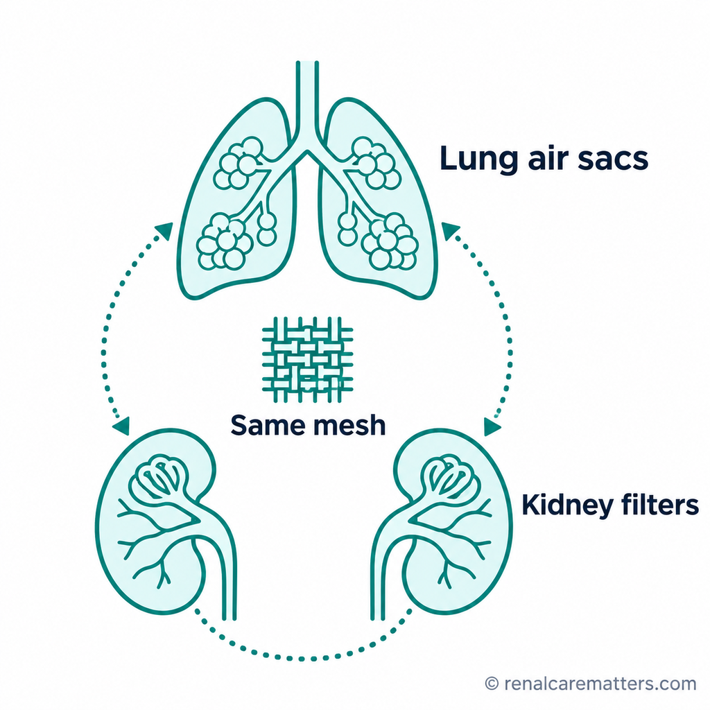
The air sacs of the lungs and the filters of the kidneys share the same kind of mesh, which is why both can be affected.Iisang uri ng lambat ang nasa air sac ng baga at salaan ng bato, kaya pareho silang puwedeng tamaan.Parehas nga klase sa pukot ang anaa sa air sac sa baga ug salaan sa kidney, mao nga pareho silang maapektuhan.Pareung klasi ning lambat ing atyu king air sac ning baga at salaan ning batu, kaya pareu lang malyaring tamaan.
Doctors do not know exactly why the immune system turns against the mesh. Inherited immune-system types (some are more common in people who get it), an infection, smoking, or breathing chemical fumes may help set it off. It is not contagious.Hindi pa alam nang eksakto ng mga doktor kung bakit bumabaling ang immune system laban sa lambat. Maaaring makatulong sa pagsisimula nito ang namanang uri ng immune system (mas karaniwan ang ilang uri sa mga nagkakasakit nito), impeksyon, paninigarilyo, o paglanghap ng usok ng kemikal. Hindi ito nakakahawa.Wala pa mahibaloi sa mga doktor kung nganong mobatok ang immune system sa pukot. Ang napanunod nga matang sa immune system (mas kasagaran ang uban sa mga matakdan niini), impeksyon, pagpanigarilyo, o pagsimhot sa aso sa kemikal mahimong makatabang sa pagsugod niini. Dili kini makatakod.E pa balu nang eksaktu deng doktor nung bakit lalaban ing immune system king lambat. Malyaring makasaup king pamanyumpisa na ing mamanang klasi ning immune system (mas karaniwan ing aliwa kareng tau a kakaptan na), impeksyun, panigarilyu, o paglanghap asuk ning kemikal. E ya makakawa.
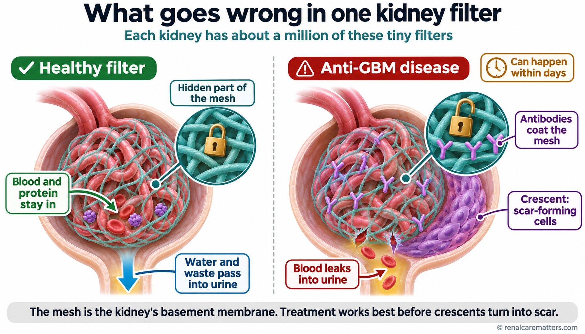
Left: a healthy filter keeps blood and protein in while water and waste pass into urine. Right: the hidden part of the mesh is exposed, antibodies coat it, blood leaks, and a crescent forms within days.Kaliwa: pinapanatili ng malusog na salaan ang dugo at protina habang dumadaan sa ihi ang tubig at dumi. Kanan: nalantad ang nakatagong bahagi ng lambat, binalot ito ng antibody, tumagas ang dugo, at nabuo ang crescent sa loob ng ilang araw.Wala: ang himsog nga salaan nagpabilin sa dugo ug protina samtang moagi sa ihi ang tubig ug hugaw. Tuo: nabuyagyag ang natagong bahin sa pukot, gitabonan kini sa antibody, mitulo ang dugo, ug naporma ang crescent sulod sa pipila ka adlaw.Kaliwa: panatilian na ning masalusung salaan ing daya at protina kabang dadaan king ihi ing danum at dumi. Wanan: melantad ing makasalikut a bage ning lambat, binalut ne ning antibody, tinulu ing daya, at mebuu ing crescent king lalam ning pilan a aldo.
- GBM
- Glomerular basement membrane, the filter mesh
Signs to watch forMga palatandaang dapat bantayanMga timailhan nga angay bantayanDeng tanda a dapat bantayan
Anti-GBM disease often starts like a flu or a cough and then speeds up over days to a few weeks. Signs that point to the kidneys or lungs:Madalas nagsisimula ang anti-GBM disease na parang trangkaso o ubo at bumibilis sa loob ng ilang araw hanggang ilang linggo. Mga palatandaang tumuturo sa bato o baga:Kasagaran magsugod ang anti-GBM disease sama sa trangkaso o ubo ug mopaspas sulod sa pipila ka adlaw hangtod pipila ka semana. Mga timailhan nga nagtudlo sa kidney o baga:Malimit mamumpisa ing anti-GBM disease antimong trangkasu o ikuyu at lumalagwa king lalam ning pilan a aldo angga king pilan a lingu. Deng tanda a tuturu king batu o baga:
- Dark, tea- or cola-colored, or red urine; foamy urineMaitim, kulay-tsaa o cola, o pulang ihi; mabulang ihiItom, kolor-tsa o cola, o pula nga ihi; bulaon nga ihiMaitim, kule-tsa o cola, o malutu a ihi; mabula a ihi
- Passing much less urine than usualMas kaunting ihi kaysa karaniwanMas gamay nga ihi kaysa kasagaranKulang a ihi kesa karaniwan
- Swelling of the face, legs, or ankles; new high blood pressure or headachePamamaga ng mukha, binti, o bukung-bukong; bagong mataas na presyon o sakit ng uloPanghubag sa nawong, bitiis, o buolbuol; bag-ong taas nga presyon o sakit sa uloPamagbaga ning lupa, bitis, o bukung-bukung; bayung matas a presyun o sakit ning buntuk
- Coughing up blood or blood-streaked phlegmPag-ubo ng dugo o plemang may bahid ng dugoPag-ubo og dugo o plema nga may bulak sa dugoPamikuyu daya o plema a atin bahid daya
- Breathlessness, especially when lying flatPaghingal, lalo na kapag nakahigaKakulang sa ginhawa, labi na kung maghigdaPamanyulas, lalu na nung makaidda
- Tiredness, pale skin, poor appetite, nauseaPagkapagod, maputlang balat, walang gana kumain, pagduduwalKakapoy, luspad nga panit, walay gana mokaon, kasukaonKapagal, maputla a balat, alang gana mangan, pamagsuka
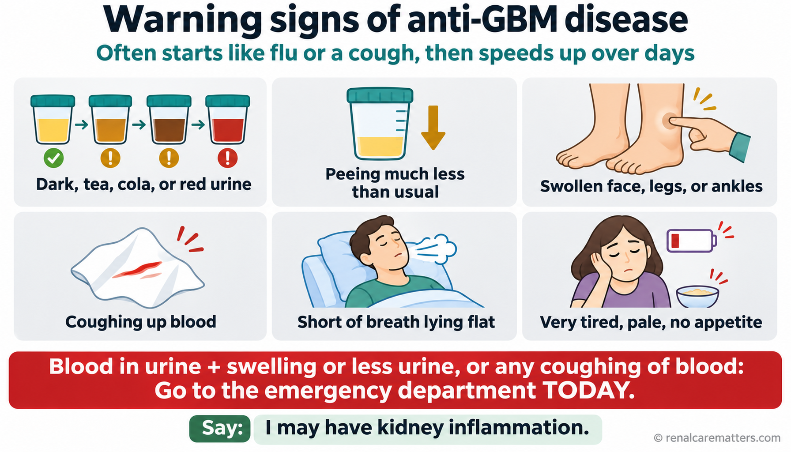
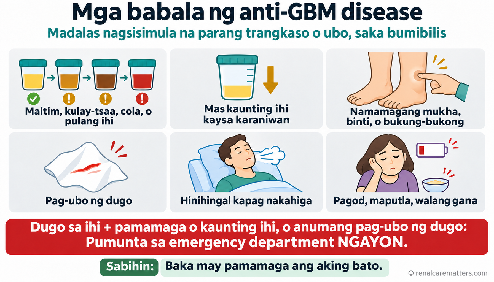
The six warning signs at a glance. Blood in the urine with swelling or less urine, or any coughing of blood, means going to the emergency department today.Ang anim na babala sa isang tingin. Ang dugo sa ihi kasabay ng pamamaga o kaunting ihi, o anumang pag-ubo ng dugo, ay nangangahulugang pumunta sa emergency department ngayon.Ang unom ka pasidaan sa usa ka tan-aw. Ang dugo sa ihi uban sa panghubag o gamay nga ihi, o bisan unsang pag-ubo og dugo, nagpasabot nga moadto sa emergency department karon.Deng anam a babala king metung a lawe. Ing daya king ihi kayabe ning pamagbaga o kulang a ihi, o nanumang pamikuyu daya, buring sabyan a munta ka king emergency department ngeni.
Some people have only kidney signs; in others the lungs bleed first. Young adults who smoke are more likely to have lung bleeding; older adults more often have kidney disease alone. Children can get it too, but rarely.Ang ilan ay may palatandaan lamang sa bato; sa iba naman, unang dumudugo ang baga. Mas malamang na dumugo ang baga ng mga batang adult na naninigarilyo; mas madalas na bato lamang ang apektado sa matatanda. Puwede rin itong tumama sa bata, pero bihira.Ang uban adunay timailhan sa kidney lang; sa uban, una nga modugo ang baga. Mas lagmit nga modugo ang baga sa batan-ong hamtong nga nanigarilyo; mas kasagaran nga kidney ra ang apektado sa mga tigulang. Mahimo usab kining motakod sa bata, apan talagsa ra.Ing aliwa atin mung tanda king batu; king aliwa, mumuna yang daraya ing baga. Mas malyaring dumaya ing baga dareng batang matua a manigarilyu; mas malimit a batu mu ing apektadu kareng matua. Malyari ya muring dumapu king anak, pero bihira.
Do not wait for it to passHuwag hintaying lumipas itoAyaw hulata nga molabay kiniAli mu panayan a lumabas ya
Blood in the urine plus swelling or less urine, or any coughing of blood, needs same-day hospital care. A delay of even a few days can mean permanent loss of kidney function.Ang dugo sa ihi kasabay ng pamamaga o mas kaunting ihi, o anumang pag-ubo ng dugo, ay nangangailangan ng pagpapaospital sa parehong araw. Ang pagkaantala kahit ilang araw ay maaaring mangahulugan ng permanenteng pagkawala ng paggana ng bato.Ang dugo sa ihi uban sa panghubag o mas gamay nga ihi, o bisan unsang pag-ubo og dugo, nanginahanglan og pagpaospital sa samang adlaw. Ang paglangan bisan pipila ka adlaw mahimong mosangpot sa permanenteng pagkawala sa paglihok sa kidney.Ing daya king ihi kayabe ning pamagbaga o kulang a ihi, o nanumang pamikuyu daya, kailangan nang mipaospital king aldo mung iyan. Ing pamaglangan agyang pilan a aldo malyaring buring sabyan permanenting pamamalan ning pamagobra ning batu.
How doctors confirm itPaano ito kinukumpirma ng doktorUnsaon kini pagkumpirma sa doktorMakananu ne kukumpirman ning doktor
Because the disease moves fast, several tests are done on the same day:Dahil mabilis lumala ang sakit, sabay-sabay na ginagawa ang ilang pagsusuri sa iisang araw:Tungod kay paspas mograbe ang sakit, dungan nga himoon ang pipila ka pagsusi sa samang adlaw:Uli ta malagwang lumala ing saquit, sabay-sabay dang gagawan deng pamanigaral king metung mung aldo:
- Anti-GBM antibody blood test looks for the antibodies. Most people with the classic disease test positive, but about 1 in 10 do not, so a negative result does not always rule it out.Anti-GBM antibody blood test: hinahanap ang antibody. Positibo ang karamihan sa may klasikong sakit, pero mga 1 sa 10 ang hindi, kaya hindi laging inaalis ng negatibong resulta ang posibilidad.Anti-GBM antibody blood test: pangitaon ang antibody. Positibo ang kadaghanan nga adunay klasikong sakit, apan mga 1 sa 10 ang dili, busa dili kanunay mapapas sa negatibong resulta ang posibilidad.Anti-GBM antibody blood test: pagdalanan ne ing antibody. Positibu la ing kayaliwan a atin klasikung saquit, pero 1 king 10 ing ali, kaya e palagi mailako ning negatibung resulta ing posibilidad.
- Anti-neutrophil cytoplasmic antibody (ANCA) test. About one in three people with anti-GBM disease also have ANCA, a second autoimmune marker. This changes long-term treatment, so both tests are sent together.Anti-neutrophil cytoplasmic antibody (ANCA) test. Mga isa sa tatlong may anti-GBM disease ang may ANCA din, isang pangalawang autoimmune marker. Binabago nito ang pangmatagalang gamutan, kaya sabay ipinapadala ang dalawang test.Anti-neutrophil cytoplasmic antibody (ANCA) test. Mga usa sa tulo nga adunay anti-GBM disease ang adunay ANCA usab, ikaduhang autoimmune marker. Gibag-o niini ang dugay nga pagtambal, busa dungan ipadala ang duha ka test.Anti-neutrophil cytoplasmic antibody (ANCA) test. Metung king atlung atin anti-GBM disease ing atin muring ANCA, ikaduang autoimmune marker. Babaywan na ing malualang pamanulu, kaya sabay dang ipapadala ing adwang test.
- Urine tests: blood, protein, and red-cell clumps (casts) show inflamed filters.Pagsusuri sa ihi: ang dugo, protina, at kumpol ng red cell (cast) ay nagpapakita ng namamagang salaan.Pagsusi sa ihi: ang dugo, protina, ug pundok sa red cell (cast) nagpakita sa nanghubag nga salaan.Pamanigaral king ihi: ing daya, protina, at kumpul ning red cell (cast) pakit la ing mamagbaga a salaan.
- Blood creatinine and potassium show how much filtering is left and whether dialysis is needed now.Creatinine at potassium sa dugo: ipinapakita kung gaano karami pa ang natitirang pagsasala at kung kailangan na ng dialysis.Creatinine ug potassium sa dugo: nagpakita kung pila pa ang nabilin nga pagsala ug kung kinahanglan na ang dialysis.Creatinine at potassium king daya: pakit na nung pilan pa ing makanyang pamanyala at nung kailangan na ing dialysis.
- Chest X-ray or computed tomography (CT) scan looks for bleeding in the lungs.Chest X-ray o computed tomography (CT) scan: hinahanap ang pagdurugo sa baga.Chest X-ray o computed tomography (CT) scan: pangitaon ang pagdugo sa baga.Chest X-ray o computed tomography (CT) scan: pagdalanan na ing pamaraya king baga.
- Kidney biopsy: a thin-needle sample. Under a special microscope the antibodies line the filter walls in a smooth, straight ribbon (a "linear" pattern). The biopsy also counts how many filters are still normal, which helps predict recovery.Kidney biopsy: sample gamit ang manipis na karayom. Sa espesyal na mikroskopyo, nakahanay ang antibody sa pader ng salaan sa makinis at tuwid na laso (pattern na "linear"). Binibilang din ng biopsy kung ilang salaan ang normal pa, na tumutulong hulaan ang paggaling.Kidney biopsy: sample gamit ang nipis nga dagom. Sa espesyal nga mikroskopyo, ang antibody naglinya sa bungbong sa salaan sa hapsay ug tul-id nga laso (pattern nga "linear"). Ihapon usab sa biopsy kung pila pa ang normal nga salaan, nga motabang pagtag-an sa pagkaayo.Kidney biopsy: sample gamit ing manipis a karayum. King espesyal a mikroskopyu, makahanay la reng antibody king pader ning salaan king makinis at matulid a lasu (pattern a "linear"). Bibilangan na muri ning biopsy nung pilan pa ing normal a salaan, a saup king panula king pamagmayap.
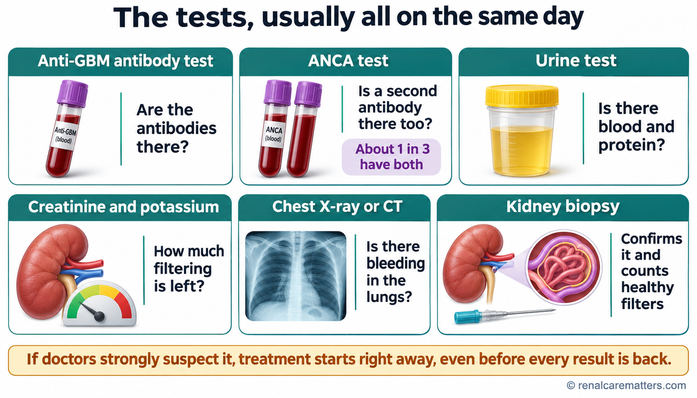
What each test answers. If doctors strongly suspect anti-GBM disease, treatment starts right away, even before every result is back.Ang sinasagot ng bawat test. Kapag malakas ang hinala ng doktor, sinisimulan agad ang gamutan kahit hindi pa bumabalik ang lahat ng resulta.Ang gitubag sa matag test. Kung kusog ang pagduda sa doktor, sugdan dayon ang pagtambal bisan wala pa mobalik ang tanang resulta.Ing sasabatan ning balang test. Nung masikan ing duda ning doktor, umpisan dang agad ing pamanulu agyang e pa mibalik ing eganagang resulta.
- ANCA
- Anti-neutrophil cytoplasmic antibody
- CT
- Computed tomography
Why treatment may start before every result is backBakit maaaring magsimula ang gamutan bago bumalik ang lahat ng resultaNganong mahimong magsugod ang pagtambal sa dili pa mobalik ang tanang resultaNung bakit malyaring mamumpisa ing pamanulu bayu mibalik ing eganagang resulta
The antibody test can take a day or more, especially when the sample is sent to another laboratory, and each day of delay can cost more filters. When doctors strongly suspect anti-GBM disease, international guidelines advise starting treatment right away, even before the diagnosis is confirmed. The biopsy is still done as soon as it is safe.Puwedeng umabot ng isang araw o higit pa ang antibody test, lalo na kapag ipinadala ang sample sa ibang laboratoryo, at bawat araw ng pagkaantala ay puwedeng magpawala ng mas maraming salaan. Kapag malakas ang hinala ng doktor, pinapayuhan ng internasyonal na gabay na simulan agad ang gamutan, kahit hindi pa kumpirmado ang diagnosis. Ginagawa pa rin ang biopsy kapag ligtas na.Mahimong moabot og usa ka adlaw o labaw pa ang antibody test, labi na kung ipadala ang sample sa laing laboratoryo, ug matag adlaw sa paglangan mahimong mawad-an og daghang salaan. Kung kusog ang pagduda sa doktor, gitambagan sa internasyonal nga giya nga sugdan dayon ang pagtambal, bisan wala pa makumpirma ang diagnosis. Himoon gihapon ang biopsy kung luwas na.Malyaring tumagal metung aldo o lagpas ing antibody test, lalu na nung ipadala ya ing sample king aliwang laboratoryu, at balang aldo ning pamaglangan malyaring mamalan kayaliwang salaan. Nung masikan ing duda ning doktor, pipayu ning internasyunal a giya a umpisan ya agad ing pamanulu, agyang e pa kumpirmadu ing diagnosis. Gagawan da pa murin ing biopsy nung ligtas ne.
How it is treatedPaano ito ginagamotUnsaon kini pagtambalMakananu ne gagamutan
Treatment has three jobs, and they happen at the same time.May tatlong trabaho ang gamutan, at sabay-sabay itong ginagawa.Adunay tulo ka trabaho ang pagtambal, ug dungan kini nga himoon.Atin atlung obra ing pamanulu, at sabay-sabay dang gagawan.
1. Remove the antibodies already in the blood: plasma exchange1. Alisin ang antibody na nasa dugo na: plasma exchange1. Kuhaa ang antibody nga anaa na sa dugo: plasma exchange1. Ilako ing antibody a atyu na king daya: plasma exchange
Plasma exchange (also called plasmapheresis) works a little like dialysis for antibodies. Blood flows from a large catheter in the neck or groin into a machine that spins or filters out the plasma, the yellow liquid part of blood that carries the antibodies. Your blood cells come back to you with a replacement fluid: albumin, or donated plasma if you are bleeding or have just had a biopsy. A session takes about 2 to 3 hours. It is done every day until the antibody test is negative, usually about 2 weeks.Ang plasma exchange (tinatawag ding plasmapheresis) ay parang dialysis para sa antibody. Dumadaloy ang dugo mula sa malaking catheter sa leeg o singit papunta sa makinang umiikot o sumasala sa plasma, ang dilaw na likidong bahagi ng dugo na nagdadala ng antibody. Ibinabalik sa iyo ang mga blood cell kasama ng kapalit na likido: albumin, o plasma mula sa donor kung dumudugo ka o kakatapos lang ng biopsy. Mga 2 hanggang 3 oras ang isang session. Ginagawa ito araw-araw hanggang maging negatibo ang antibody test, karaniwang mga 2 linggo.Ang plasma exchange (gitawag usab nga plasmapheresis) sama sa dialysis para sa antibody. Moagos ang dugo gikan sa dakong catheter sa liog o singit ngadto sa makina nga motuyok o mosala sa plasma, ang dalag nga likidong bahin sa dugo nga nagdala sa antibody. Ibalik kanimo ang mga blood cell uban sa ilisan nga likido: albumin, o plasma gikan sa donor kung nagdugo ka o bag-o ra nahuman ang biopsy. Mga 2 hangtod 3 ka oras ang usa ka session. Himoon kini adlaw-adlaw hangtod mahimong negatibo ang antibody test, kasagaran mga 2 ka semana.Ing plasma exchange (aus da muring plasmapheresis) antimong dialysis para king antibody. Dadaluy ing daya manibat king maragul a catheter king batal o singit papunta king makina a mamikut o mamanyala king plasma, ing madulang likidung bage ning daya a dadalan king antibody. Ibalik deng blood cell kekami kayabe ning kapalit a likidu: albumin, o plasma manibat king donor nung daraya ka o kapupusan mu ning biopsy. Ating 2 angga 3 oras ing metung a session. Gagawan ya aldo-aldo angga maging negatibu ing antibody test, karaniwang ating 2 lingu.
Most people feel little during a session. Some feel tingling around the lips or feel cold; tell the nurse, who can adjust the treatment or give calcium. Your team checks clotting, platelets, and calcium often.Kakaunti lamang ang nararamdaman ng karamihan habang may session. Ang ilan ay nakakaramdam ng pangingilig sa paligid ng labi o ginaw; sabihin sa nurse, na puwedeng mag-ayos ng gamutan o magbigay ng calcium. Madalas sinusuri ng team ang pamumuo ng dugo, platelet, at calcium.Gamay ra ang mabati sa kadaghanan samtang naa sa session. Ang uban mobati og kibot-kibot sa palibot sa ngabil o katugnaw; sultihi ang nurse, nga makaayo sa pagtambal o mohatag og calcium. Kanunay susihon sa team ang pagbaga sa dugo, platelet, ug calcium.Kakaunti mu ing daramdaman ning kayaliwan kabang atin session. Ing aliwa daramdaman dang pamangilig king palibut ning labi o marimla; sabyan me ing nurse, a malyaring mag-ayus ning pamanulu o mangibie calcium. Malimit dang sisiyasatan ning team ing pamamuu ning daya, platelet, at calcium.
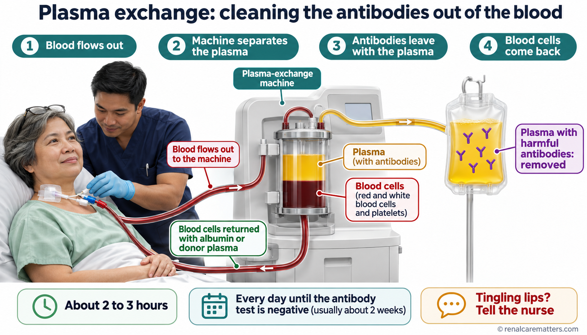
Plasma exchange in four steps. A session takes about 2 to 3 hours and is repeated every day until the antibody test is negative, usually about 2 weeks.Ang plasma exchange sa apat na hakbang. Mga 2 hanggang 3 oras ang isang session at inuulit araw-araw hanggang maging negatibo ang antibody test, karaniwang mga 2 linggo.Ang plasma exchange sa upat ka lakang. Mga 2 hangtod 3 ka oras ang usa ka session ug balikon adlaw-adlaw hangtod mahimong negatibo ang antibody test, kasagaran mga 2 ka semana.Ing plasma exchange king apat a pamikurang. Ating 2 angga 3 oras ing metung a session at uulitan aldo-aldo angga maging negatibu ing antibody test, karaniwang ating 2 lingu.
2. Stop the body from making more: immune medicines2. Pigilan ang katawan sa paggawa pa: gamot sa immune system2. Pugngi ang lawas sa paghimo pa: tambal sa immune system2. Pigilan ing katawan a gawa pa: gamut king immune system
Steroid tablets (prednisone or prednisolone) start at a high dose and are lowered step by step until stopped at about 6 months. Cyclophosphamide, taken by mouth once a day for 2 to 3 months, quiets the immune cells that make the antibodies. If cyclophosphamide is not safe for you, rituximab (given by drip) may be used instead. Unlike many other kidney diseases, classic anti-GBM disease usually does not need long-term medicine after this course.Ang steroid na tableta (prednisone o prednisolone) ay nagsisimula sa mataas na dosis at unti-unting binababa hanggang ihinto sa mga 6 na buwan. Ang cyclophosphamide, iniinom isang beses araw-araw nang 2 hanggang 3 buwan, ay nagpapatahimik sa mga immune cell na gumagawa ng antibody. Kung hindi ligtas sa iyo ang cyclophosphamide, puwedeng gamitin ang rituximab (isinasaksak sa swero). Di tulad ng maraming sakit sa bato, karaniwang hindi na kailangan ng pangmatagalang gamot ang klasikong anti-GBM disease pagkatapos ng kursong ito.Ang steroid nga tableta (prednisone o prednisolone) magsugod sa taas nga dosis ug hinay-hinay nga ipaubos hangtod hunongon sa mga 6 ka bulan. Ang cyclophosphamide, imnon kausa kada adlaw sulod sa 2 hangtod 3 ka bulan, mopahilom sa mga immune cell nga mohimo og antibody. Kung dili luwas kanimo ang cyclophosphamide, mahimong gamiton ang rituximab (ihatag pinaagi sa swero). Dili sama sa daghang sakit sa kidney, kasagaran dili na kinahanglan og dugay nga tambal ang klasikong anti-GBM disease human niining kurso.Ing steroid a tableta (prednisone o prednisolone) mamumpisa king matas a dosis at dahan-dahan dang pababan angga ipatigil king ating 6 a bulan. Ing cyclophosphamide, iinuman misan king aldo-aldo king lalam ning 2 angga 3 bulan, pipatahimik la reng immune cell a gagawa antibody. Nung e ligtas keka ing cyclophosphamide, malyaring gamitan ing rituximab (ibie king swero). E antimo ning dakal a saquit king batu, karaniwang e na kailangan malualang gamut ing klasikung anti-GBM disease kaibat ning kursu a iti.
3. Protect you while the immune system is lowered3. Protektahan ka habang mahina ang immune system3. Panalipdi ka samtang huyang ang immune system3. Protektan da ka kabang mayupaya ing immune system
- An antibiotic tablet (cotrimoxazole) to prevent a serious lung infectionAntibiotic na tableta (cotrimoxazole) para maiwasan ang malubhang impeksyon sa bagaAntibiotic nga tableta (cotrimoxazole) aron malikayan ang grabeng impeksyon sa bagaAntibiotic a tableta (cotrimoxazole) ban maliwasan ing malalang impeksyun king baga
- Stomach and bone protection while on high-dose steroids, and a mouth antifungal if neededProteksyon sa sikmura at buto habang mataas ang dosis ng steroid, at antifungal sa bibig kung kailanganProteksyon sa tiyan ug bukog samtang taas ang dosis sa steroid, ug antifungal sa baba kung kinahanglanProteksyun king tian at bukul kabang matas ing dosis ning steroid, at antifungal king asbuk nung kailangan
- A hepatitis B blood check before treatment, because these medicines can wake up a hidden infectionPagsusuri ng hepatitis B bago ang gamutan, dahil kayang gisingin ng mga gamot na ito ang nakatagong impeksyonPagsusi sa hepatitis B sa dili pa ang pagtambal, kay kaya niining mga tambal nga pukawon ang natagong impeksyonPamanigaral ning hepatitis B bayu ing pamanulu, uli ta kaya dareng gamut a iti a pukawan ing makasalikut a impeksyun
- Plenty of fluids and frequent urination while on cyclophosphamide, to protect the bladder (unless your doctor limits fluids)Maraming likido at madalas na pag-ihi habang nasa cyclophosphamide, para protektahan ang pantog (maliban kung nililimitahan ng doktor ang likido)Daghang likido ug kanunay nga pag-ihi samtang naa sa cyclophosphamide, aron mapanalipdan ang pantog (gawas kung limitahan sa doktor ang likido)Dakal a likidu at malimit a pamag-ihi kabang atin cyclophosphamide, ban protektan ing pantug (liban nung limitan ning doktor ing likidu)
- A talk about protecting your fertility (eggs or sperm) before cyclophosphamide, if you may want childrenPag-usap tungkol sa pagprotekta ng iyong fertility (itlog o semilya) bago ang cyclophosphamide, kung gusto mo pang magkaanakPanaghisgot bahin sa pagpanalipod sa imong fertility (itlog o semilya) sa dili pa ang cyclophosphamide, kung gusto ka pang makaanakPamisabi tungkul king pamagprotekta ning fertility mu (ebun o semilya) bayu ing cyclophosphamide, nung buri mu pang magkaanak
Dialysis is support, not failureSuporta ang dialysis, hindi pagkabigoSuporta ang dialysis, dili kapakyasanSuporta ya ing dialysis, e pamibigu
If the kidneys cannot clean the blood well enough, dialysis does that job while treatment works. Some people need it only for a few weeks.Kung hindi sapat na nalilinis ng bato ang dugo, ang dialysis ang gagawa nito habang gumagana ang gamutan. May ilang kailangan lamang nito nang ilang linggo.Kung dili igo nga malimpyohan sa kidney ang dugo, ang dialysis ang mohimo niini samtang molihok ang pagtambal. Ang uban kinahanglan ra niini sulod sa pipila ka semana.Nung e sapat a malinis ning batu ing daya, ing dialysis ing gawa kaniti kabang gagana ing pamanulu. Ing aliwa kailangan de mu iti king pilan a lingu.
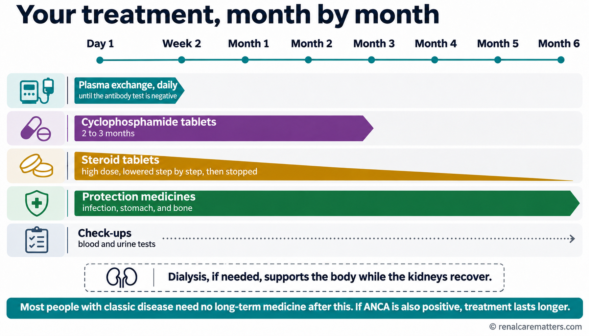
Your treatment month by month. Most people with classic disease need no long-term medicine after this course.Ang iyong gamutan buwan-buwan. Karamihan sa may klasikong sakit ay hindi na nangangailangan ng pangmatagalang gamot pagkatapos nito.Ang imong pagtambal bulan-bulan. Kadaghanan sa adunay klasikong sakit dili na manginahanglan og dugay nga tambal human niini.Ing pamanulu mu bulan-bulan. Ing kayaliwan a atin klasikung saquit e na kailangan malualang gamut kaibat na niti.
- ANCA
- Anti-neutrophil cytoplasmic antibody
Before you start, tell the teamBago magsimula, sabihin sa teamSa dili pa magsugod, sultihi ang teamBayu mamumpisa, sabyan me ing team
If you are or could be pregnant; if you have had tuberculosis, hepatitis, or a recent infection; and every medicine, vitamin, and herbal product you take.Kung buntis ka o maaaring buntis; kung nagkaroon ka ng tuberculosis, hepatitis, o kamakailang impeksyon; at lahat ng gamot, bitamina, at herbal na iniinom mo.Kung mabdos ka o mahimong mabdos; kung nakabaton ka og tuberculosis, hepatitis, o bag-ohay nga impeksyon; ug tanang tambal, bitamina, ug herbal nga imong ginainom.Nung magdalang tau ka o malyaring magdalang tau; nung mengaliwa kang tuberculosis, hepatitis, o kapilan pamung impeksyun; at eganagang gamut, bitamina, at herbal a iinuman mu.
What recovery looks likeAno ang hitsura ng paggalingUnsa ang dagway sa pagkaayoNanu ing itsura ning pamagmayap
The lungs usually respond very well: with treatment, lung bleeding stops in nine or ten of every ten people. The kidneys depend most on how much filtering was left when treatment began.Kadalasang tumutugon nang mahusay ang baga: sa gamutan, humihinto ang pagdurugo ng baga sa siyam o sampu sa bawat sampung tao. Ang bato ay pinakanakadepende sa kung gaano karami pang pagsasala ang natira nang magsimula ang gamutan.Kasagaran motubag pag-ayo ang baga: sa pagtambal, mohunong ang pagdugo sa baga sa siyam o napulo sa matag napulo ka tawo. Ang kidney labing nagdepende kung pila pa ang nabilin nga pagsala sa pagsugod sa pagtambal.Karaniwang mayap ing pamanyabat ning baga: king pamanulu, tutuknang ing pamaraya ning baga king siyam o apulu king balang apulung tau. Ing batu pekamakadepende king nung pilan pa ing mekeyabang pamanyala kanita mumpisa ing pamanulu.
- Not on dialysis when treatment starts: most people keep working kidneys. In a British series of 71 patients, about 9 in 10 of these patients still had their own kidney function a year later.Hindi pa nagda-dialysis nang magsimula ang gamutan: karamihan ay may gumaganang bato pa rin. Sa isang British na serye ng 71 pasyente, mga 9 sa 10 ng mga pasyenteng ito ang may sariling paggana ng bato pa rin makalipas ang isang taon.Wala pa nagdialysis sa pagsugod sa pagtambal: kadaghanan adunay naglihok pa nga kidney. Sa usa ka British nga serye sa 71 ka pasyente, mga 9 sa 10 niini nga pasyente adunay kaugalingong paglihok sa kidney human sa usa ka tuig.E pa magdialysis kanita mumpisa ing pamanulu: ing kayaliwan atin pang gagana a batu. King metung a British a serye ning 71 a pasyente, ating 9 king 10 kareng pasyenting iti ing atin pang sariling pamagobra ning batu kaibat ning metung a banwa.
- Already needing dialysis: recovery is less likely. Older series found about 1 in 12 came off dialysis; newer centers report up to about 1 in 5. Your doctors use the biopsy and how long dialysis has been needed to judge whether a trial of treatment is worthwhile.Nangangailangan na ng dialysis: mas maliit ang tsansang gumaling. Sa mas lumang serye, mga 1 sa 12 ang nakaalis sa dialysis; sa mas bagong sentro, hanggang mga 1 sa 5. Ginagamit ng doktor ang biopsy at kung gaano na katagal kailangan ang dialysis para timbangin kung sulit subukan ang gamutan.Nagkinahanglan na og dialysis: mas gamay ang higayon sa pagkaayo. Sa mas karaang serye, mga 1 sa 12 ang nakagawas sa dialysis; sa mas bag-ong sentro, hangtod mga 1 sa 5. Gigamit sa doktor ang biopsy ug kung unsa na kadugay gikinahanglan ang dialysis aron timbangon kung angayan sulayan ang pagtambal.Kailangan na ning dialysis: mas malati ing kapamilatan a mayap. King mas matuang serye, 1 king 12 ing mekalako king dialysis; king mas bayung sentru, angga 1 king 5. Gagamitan ning doktor ing biopsy at nung makananu na kabalu kailangan ing dialysis ban timbangan nung sulit subukan ing pamanulu.
- What the biopsy shows matters: in a large international study, people not on dialysis whose biopsy still had at least 1 in 10 normal filters had about a 96% chance of keeping their own kidney function at 3 years; people on dialysis with fewer than 1 in 10 normal filters had about 14%.Mahalaga ang ipinapakita ng biopsy: sa isang malaking internasyonal na pag-aaral, ang mga hindi nagda-dialysis na may hindi bababa sa 1 sa 10 normal na salaan ay may mga 96% na tsansang mapanatili ang sariling paggana ng bato pagkalipas ng 3 taon; ang mga nagda-dialysis na may mas kaunti sa 1 sa 10 normal na salaan ay may mga 14%.Importante ang gipakita sa biopsy: sa usa ka dakong internasyonal nga pagtuon, ang wala nagdialysis nga adunay labing menos 1 sa 10 normal nga salaan adunay mga 96% nga higayon nga mapabilin ang kaugalingong paglihok sa kidney human sa 3 ka tuig; ang nagdialysis nga adunay ubos sa 1 sa 10 normal nga salaan adunay mga 14%.Mayalaga ing pakit ning biopsy: king metung a maragul a internasyunal a pamanigaral, deng e magdialysis a atin agyang 1 king 10 a normal a salaan atin lang ating 96% a kapamilatan a panatilian ing sariling pamagobra ning batu kaibat ning 3 banwa; deng magdialysis a kulang king 1 king 10 a normal a salaan atin lang ating 14%.
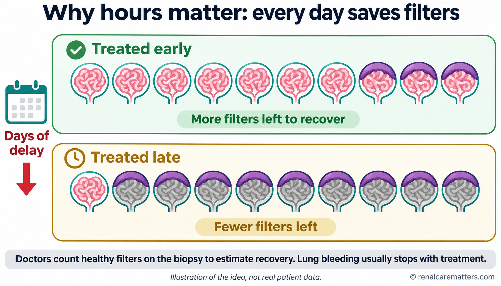
An illustration of the idea, not real patient data: the earlier treatment starts, the more filters are left to recover.Paglalarawan ng ideya, hindi totoong datos ng pasyente: kapag mas maagang nagsimula ang gamutan, mas maraming salaan ang natitira para gumaling.Paghulagway sa ideya, dili tinuod nga datos sa pasyente: kung mas sayo magsugod ang pagtambal, mas daghang salaan ang mabilin aron maayo.Paglarawan ning idea, e tutung datos ning pasyente: nung mas maaga mumpisa ing pamanulu, mas dakal a salaan ing makanyang mayap.
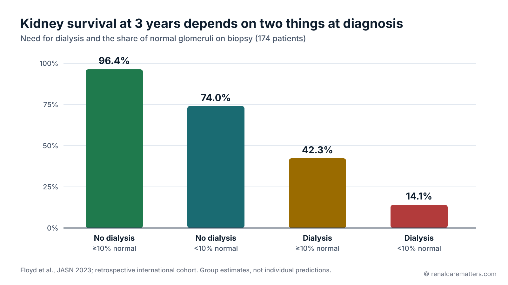
Three-year kidney survival in 174 patients, grouped by need for dialysis at diagnosis and the share of normal filters on biopsy. These are group averages, not a prediction for one person.Tatlong-taong kaligtasan ng bato sa 174 na pasyente, ayon sa pangangailangan ng dialysis sa diagnosis at bahagi ng normal na salaan sa biopsy. Mga average ito ng grupo, hindi hula para sa isang tao.Tulo ka tuig nga kaluwasan sa kidney sa 174 ka pasyente, sumala sa panginahanglan sa dialysis sa diagnosis ug bahin sa normal nga salaan sa biopsy. Mga average kini sa grupo, dili tagna para sa usa ka tawo.Atlung banwang kaligtasan ning batu king 174 a pasyente, ayun king kailangan ning dialysis king diagnosis at bage ning normal a salaan king biopsy. Deng average la ning grupu, e panula para king metung a tau.
Children and teenagers. A 2026 European study of 72 patients, 25 of them children, found that children usually had more kidney function left at diagnosis and ended with better kidney function than adults. Needing dialysis at the start predicted a worse kidney outcome at any age.Mga bata at tinedyer. Natuklasan ng isang European na pag-aaral noong 2026 sa 72 pasyente, 25 sa kanila ay bata, na karaniwang mas marami pang natitirang paggana ng bato ang mga bata sa diagnosis at mas maganda ang kinalabasan kaysa sa mga adult. Ang pangangailangan ng dialysis sa simula ay nagpahiwatig ng mas masamang kinalabasan sa anumang edad.Mga bata ug tin-edyer. Nakaplagan sa usa ka European nga pagtuon niadtong 2026 sa 72 ka pasyente, 25 kanila mga bata, nga kasagaran mas daghan pang nabilin nga paglihok sa kidney ang mga bata sa diagnosis ug mas maayo ang resulta kaysa sa mga hamtong. Ang panginahanglan sa dialysis sa sinugdanan nagtimaan og mas dili maayong resulta sa bisan unsang edad.Deng anak at tinedyer. Akit ning metung a European a pamanigaral king 2026 king 72 a pasyente, 25 kareti anak, a karaniwang mas dakal pa ing makanyang pamagobra ning batu dareng anak king diagnosis at mas mayap ing kalalabasan kesa kareng matua. Ing kailangan ning dialysis king pamanyumpisa tuturu king mas marok a kalalabasan king nanumang edad.
These numbers describe groups, not youGrupo ang inilalarawan ng mga numerong ito, hindi ikawGrupo ang gihulagway niining mga numero, dili ikawGrupu ing ilalarawan dareng numeru a iti, e ika
They come from studies of other patients, some treated decades ago. Your own chance depends on your biopsy, your age, how quickly treatment began, and how your body responds. Ask your doctor what your results mean for you.Galing ang mga ito sa pag-aaral ng ibang pasyente, ang ilan ay ginamot ilang dekada na ang nakalipas. Ang sarili mong tsansa ay nakadepende sa iyong biopsy, edad, gaano kabilis nagsimula ang gamutan, at paano tumugon ang iyong katawan. Tanungin ang doktor kung ano ang ibig sabihin ng iyong resulta para sa iyo.Gikan kini sa pagtuon sa ubang pasyente, ang uban gitambalan pipila ka dekada na ang milabay. Ang imong kaugalingong higayon nagdepende sa imong biopsy, edad, unsa kadali nagsugod ang pagtambal, ug unsaon pagtubag sa imong lawas. Pangutan-a ang doktor kung unsay buot ipasabot sa imong resulta para kanimo.Manibat la reti king pamanigaral kareng aliwang pasyente, ing aliwa ginamut ne pilan a dekada ne ing milabas. Ing sarili mung kapamilatan makadepende king biopsy mu, edad, nung makananu kalagwa mumpisa ing pamanulu, at makananu sinabat ing katawan mu. Kutnan me ing doktor nung nanu ing buring sabyan ning resulta mu para keka.
Life after anti-GBM diseaseBuhay pagkatapos ng anti-GBM diseaseKinabuhi human sa anti-GBM diseaseBie kaibat ning anti-GBM disease
Classic anti-GBM disease usually happens once. In large studies it came back in fewer than about 3 to 6 of every 100 people, sometimes years later and often with lung bleeding. What you can do:Karaniwang isang beses lamang nangyayari ang klasikong anti-GBM disease. Sa malalaking pag-aaral, bumalik ito sa wala pang mga 3 hanggang 6 sa bawat 100 tao, kung minsan makalipas ang ilang taon at madalas may kasamang pagdurugo ng baga. Ang magagawa mo:Kasagaran kausa ra mahitabo ang klasikong anti-GBM disease. Sa dagkong pagtuon, mibalik kini sa ubos pa sa mga 3 hangtod 6 sa matag 100 ka tawo, usahay human sa pipila ka tuig ug kasagaran uban ang pagdugo sa baga. Ang imong mahimo:Karaniwang misan mu mamyari ing klasikung anti-GBM disease. King marangal a pamanigaral, mibalik ya king kulang pa king 3 angga 6 king balang 100 a tau, kung kaisa kaibat ning pilan a banwa at malimit kayabe ning pamaraya ning baga. Ing malyari mung gawan:
- Stop smoking completely, including vaping, and avoid breathing fuel, paint-thinner, or solvent fumes. Relapses are linked with smoking and chemical fumes.Tuluyang itigil ang paninigarilyo, kasama ang vaping, at iwasang malanghap ang usok ng gasolina, thinner, o solvent. Iniuugnay ang pagbalik ng sakit sa paninigarilyo at usok ng kemikal.Hunonga gyud ang pagpanigarilyo, lakip ang vaping, ug likayi ang pagsimhot sa aso sa gasolina, thinner, o solvent. Gilambigit ang pagbalik sa sakit sa pagpanigarilyo ug aso sa kemikal.Ipatigil me ing panigarilyu, kayabe ing vaping, at iwasan me ing manlanghap asuk ning gasolina, thinner, o solvent. Kaugnay ing pamagbalik ning saquit king panigarilyu at asuk ning kemikal.
- Keep your follow-up tests, including the anti-GBM blood test, urine tests, and creatinine, as scheduled.Ituloy ang mga follow-up test, kasama ang anti-GBM blood test, pagsusuri sa ihi, at creatinine, ayon sa iskedyul.Padayona ang mga follow-up test, lakip ang anti-GBM blood test, pagsusi sa ihi, ug creatinine, sumala sa iskedyul.Ituloy me ing follow-up test, kayabe ing anti-GBM blood test, pamanigaral king ihi, at creatinine, ayun king iskedyul.
- If you also have ANCA, expect longer treatment to prevent the vasculitis from returning.Kung may ANCA ka rin, asahan ang mas mahabang gamutan para hindi bumalik ang vasculitis.Kung aduna ka usab og ANCA, paabuta ang mas dugay nga pagtambal aron dili mobalik ang vasculitis.Nung atin ka muring ANCA, asahan me ing mas malualang pamanulu ban e mibalik ing vasculitis.
- Protect the kidney function you have: control blood pressure, avoid pain relievers such as ibuprofen or mefenamic acid unless your doctor approves, and ask before using herbal products.Protektahan ang natitirang paggana ng bato: kontrolin ang presyon, iwasan ang pain reliever gaya ng ibuprofen o mefenamic acid maliban kung payag ang doktor, at magtanong bago gumamit ng herbal.Panalipdi ang nabilin nga paglihok sa kidney: kontrola ang presyon, likayi ang pain reliever sama sa ibuprofen o mefenamic acid gawas kung uyon ang doktor, ug pangutana sa dili pa mogamit og herbal.Protektan me ing makanyang pamagobra ning batu: kontrolan me ing presyun, iwasan me ing pain reliever antimo ning ibuprofen o mefenamic acid liban nung pumayag ing doktor, at kutang ka bayu gumamit herbal.
- Ask about vaccines and plan any pregnancy with your doctors.Magtanong tungkol sa bakuna at planuhin ang anumang pagbubuntis kasama ng doktor.Pangutana bahin sa bakuna ug planoha ang bisan unsang pagmabdos uban sa doktor.Kutang ka tungkul king bakuna at planuan me ing nanumang pamagdalang tau kayabe ning doktor.
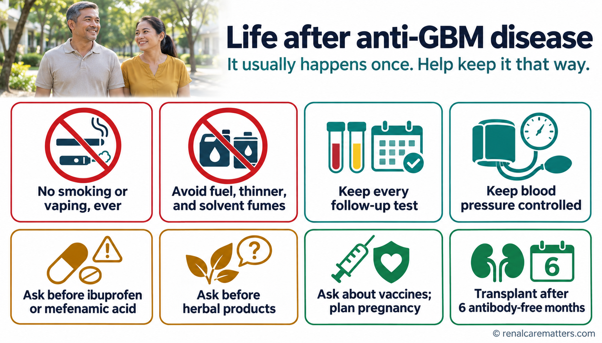
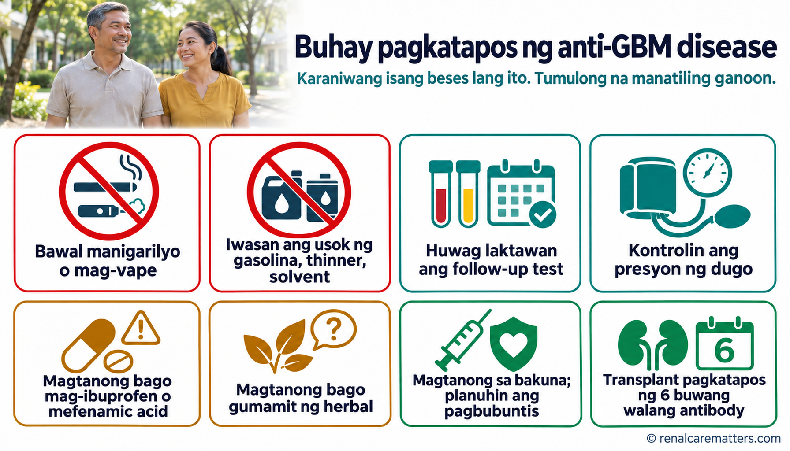
Eight things that help keep anti-GBM disease from coming back and protect the kidney function you have.Walong bagay na tumutulong para hindi bumalik ang anti-GBM disease at maprotektahan ang natitirang paggana ng bato.Walo ka butang nga motabang aron dili mobalik ang anti-GBM disease ug mapanalipdan ang nabilin nga paglihok sa kidney.Walung bage a saup ban e mibalik ing anti-GBM disease at maprotektan ing makanyang pamagobra ning batu.
If the kidneys do not recover, both dialysis and kidney transplant are possible. A transplant is done only after the anti-GBM blood test has stayed negative for at least 6 months; with that rule, the disease rarely returns in the new kidney.Kung hindi gumaling ang bato, posible ang dialysis at kidney transplant. Ginagawa lamang ang transplant kapag nanatiling negatibo ang anti-GBM blood test nang hindi bababa sa 6 na buwan; sa patakarang ito, bihirang bumalik ang sakit sa bagong bato.Kung dili maayo ang kidney, posible ang dialysis ug kidney transplant. Himoon lang ang transplant kung nagpabilin nga negatibo ang anti-GBM blood test sulod sa labing menos 6 ka bulan; sa kini nga lagda, talagsa ra mobalik ang sakit sa bag-ong kidney.Nung e mayap ing batu, posibli ing dialysis at kidney transplant. Gagawan mu ing transplant nung manatiling negatibu ing anti-GBM blood test agyang 6 a bulan; king patakaran a iti, bihira yang mibalik ing saquit king bayung batu.
Questions to ask your care teamMga tanong para sa iyong care teamMga pangutana para sa imong care teamDeng kutang para king care team mu
Tick the questions you want to ask, then print only those to bring to your next visit.Lagyan ng tsek ang mga tanong na gusto mong itanong, saka i-print lamang ang mga iyon para dalhin sa susunod na pagpapatingin.Tsekan ang mga pangutana nga gusto nimong ipangutana, unya i-print lang kadto aron dad-on sa sunod nga pagpatan-aw.Tsekan me ing kutang a buri mung itanung, kaibat i-print me mu reti ban darapan king susunod a pamagpakunsulta.
Questions patients and families often askMga madalas itanong ng pasyente at pamilyaMga kanunay ipangutana sa pasyente ug pamilyaReng malimit itanung ning pasyente at pamilya
Is anti-GBM disease inherited?Namamana ba ang anti-GBM disease?Napanunod ba ang anti-GBM disease?Mamana ya ba ing anti-GBM disease?
Is it contagious?Nakakahawa ba ito?Makatakod ba kini?Makakawa ya ba?
Is it the same as lupus or vasculitis?Pareho ba ito ng lupus o vasculitis?Parehas ba kini sa lupus o vasculitis?Pareu ya ba ning lupus o vasculitis?
Did a medicine or vaccine cause my illness?May gamot o bakuna bang nagdulot ng aking sakit?Aduna bay tambal o bakuna nga hinungdan sa akong sakit?Atin bang gamut o bakuna a sinanu ning saquit ku?
Will I need medicine for life?Kakailanganin ko ba ng gamot habambuhay?Kinahanglan ba nako og tambal hangtod sa kahangtoran?Kailangan ku ba ing gamut king tibuang bie ku?
Can I still work, study, or exercise?Puwede pa ba akong magtrabaho, mag-aral, o mag-ehersisyo?Mahimo pa ba ko motrabaho, moeskwela, o mo-ehersisyo?Malyari ku pa bang magobra, mag-aral, o mag-ehersisyu?
Pathophysiology: a cryptic epitope, a fast crescent
Normal structure first. The mature glomerular basement membrane (GBM) is built on a network of type IV collagen protomers made of α3, α4, and α5 chains, secreted by podocytes. Each protomer ends in a globular noncollagenous 1 (NC1) domain; two protomers join head to head so that six NC1 domains form a hexamer. The hexamer is locked by sulfilimine cross-links, which peroxidasin forms in the GBM using hypobromous acid. In this quaternary structure the two immunodominant conformational epitopes of α3(IV)NC1, EA (residues 17–31) and EB (residues 127–141), are buried. The alveolar basement membrane carries the same α3α4α5 network, which is why the lung is the only other organ routinely involved.
Mechanism What breaks. Disease requires loss of tolerance to cryptic α3(IV)NC1 epitopes. The strongest genetic association is HLA-DRB1*15:01 (human leukocyte antigen DR15): α3-derived peptides presented on DR15 drive proinflammatory CD4+ T cells, whereas presentation on DR1 is protective in transgenic models. Hexamer dissociation or modification (smoking, hydrocarbons, infection, ANCA-driven neutrophil proteases, inhibitory anti-peroxidasin antibodies) is hypothesized to expose the epitopes. Pathogenic antibodies are mainly IgG1 with IgG3; both fix complement efficiently and engage Fcγ receptors. Most patients also make antibodies to α5(IV)NC1 and α4(IV)NC1 through intramolecular and intermolecular epitope spreading, and the breadth of the repertoire tracks severity: patients with preserved function make a narrower, IgG2/IgG4-weighted response that resembles the natural low-affinity anti-GBM antibodies of healthy people (Kuang et al., 2026).
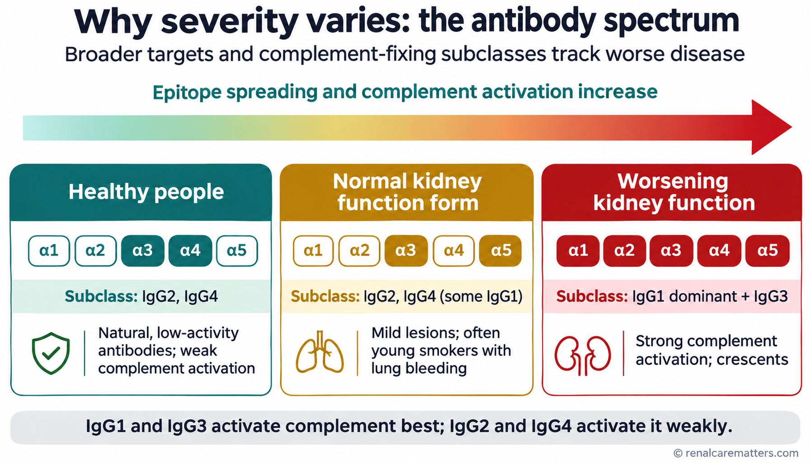
From natural antibodies (α3, α4; immunoglobulin G [IgG] subclasses IgG2/IgG4) to the normal-kidney-function form (α3, α5; IgG2/IgG4, some IgG1) to worsening disease (all five α chains; IgG1 dominant with IgG3). Complement activation rises with IgG1 and IgG3 (Kuang et al., 2026).
- IgG
- Immunoglobulin G
- α1–α5
- Chains of type IV collagen
From antibody to crescent. Linear IgG on the GBM activates the classical (and amplifying alternative) complement pathway; urinary C5a correlates with crescent proportion. Neutrophils and macrophages degrade the capillary wall, the GBM ruptures, and fibrin and plasma proteins spill into Bowman space. Fibrin is a potent stimulus for parietal epithelial cell proliferation and macrophage recruitment, so a cellular crescent forms within days and becomes fibrocellular, then fibrous, within weeks. Because the antibody attacks all glomeruli at once, crescents are typically of uniform age; a mixture of active and chronic lesions suggests a second process such as ANCA vasculitis. This tempo is the physiologic reason the guideline treats anti-GBM disease as an emergency: each day of uncontrolled antibody binding converts salvageable, cellular lesions into fixed scar.
Why the lung bleeds in some patients and not others. Alveolar capillaries are continuous, non-fenestrated endothelium, so circulating IgG has limited access to the alveolar basement membrane. Smoking, inhaled hydrocarbons, infection, and fluid overload increase capillary permeability; pulmonary hemorrhage clusters in young male smokers and is the dominant feature of native-kidney relapse. Newer targets in the alveolar membrane, laminin-521 and perlecan, have been associated with lung hemorrhage, and anti-laminin-521 antibodies induce lung hemorrhage in rats (Kuang et al., 2026). The clinical corollary is simple and actionable: smoking cessation and avoidance of inhaled irritants are part of treatment, and volume overload should be controlled aggressively in anyone with alveolar hemorrhage.

The α3α4α5(IV) NC1 hexamer hides the EA and EB epitopes. Hexamer dissociation exposes them, IgG1/IgG3 autoantibodies bind with complement activation, the capillary wall ruptures, and a crescent of uniform age forms. Treatment removes circulating antibody (plasma exchange), suppresses production (cyclophosphamide, glucocorticoids), and dampens injury.
- GBM
- Glomerular basement membrane
- NC1
- Noncollagenous domain 1
- EA, EB
- Immunodominant α3(IV)NC1 epitopes
- IgG
- Immunoglobulin G
Diagnosis: same-day serology, early biopsy, known pitfalls
Clinical setting. Rapidly progressive glomerulonephritis (RPGN; loss of at least 50% of filtration over days to weeks with active sediment) with or without diffuse alveolar hemorrhage (DAH). More than 90% of classic cases present with RPGN, and 40%–60% have alveolar hemorrhage (McAdoo & Pusey, 2025). Incidence is bimodal: young adults (more often male smokers, more lung disease) and adults in the sixth and seventh decades (more often women, more isolated kidney disease, more ANCA co-positivity). Incidence in European data is below 1 per million per year (Suhlrie et al., 2026).
Guideline KDIGO 2021 Practice Point 11.1.1: diagnosis of anti-GBM disease should be made without delay in all patients with suspected RPGN. In practice this means one blood draw, the same day, for anti-GBM antibody and ANCA (myeloperoxidase [MPO] and proteinase 3 [PR3]), with urinalysis and sediment, creatinine, potassium, complete blood count (CBC), and chest imaging.
| Test | What it adds | Pitfalls |
|---|---|---|
| Anti-GBM IgG immunoassay against α3(IV)NC1: enzyme-linked immunosorbent assay (ELISA), chemiluminescent, or multiplex bead | Positive in more than 90% of classic disease; titer and EB-directed reactivity track severity | Negative in about 10% (atypical, IgG4-restricted, IgA-mediated, or non-α3 targets); misses Alport alloantibodies to α5; low-titer positives occur without disease. Do not let a negative result stop a biopsy when the picture fits. |
| ANCA (MPO, PR3) | Positive in 30%–40%, usually MPO; changes long-term management | ANCA may precede anti-GBM antibodies by months (Olson et al., 2011) |
| Urine sediment, protein | Dysmorphic red cells and red-cell casts; proteinuria usually subnephrotic | Nephrotic-range proteinuria suggests concurrent membranous nephropathy or IgA nephropathy |
| Chest computed tomography (CT); bronchoalveolar lavage (BAL) | Bilateral ground-glass or consolidation; increasingly bloody serial BAL aliquots, hemosiderin-laden macrophages | Mimics: pulmonary edema, infection, uremic hemoptysis; a rising carbon monoxide transfer coefficient (KCO) supports hemorrhage but is often impractical |
| Kidney biopsy with immunofluorescence | Strong linear IgG (often C3) along GBM; diffuse crescents in more than 80%; quantifies normal glomeruli, crescents, sclerosis | Linear IgG also occurs in diabetic kidney disease, fibrillary glomerulonephritis, and monoclonal immunoglobulin deposition; no deposits on electron microscopy unless a second disease is present |
Practice The "disappearing glomeruli" pitfall. Ibrahim et al. (2026) described a 67-year-old man, dialysis-dependent, anti-GBM positive and ANCA negative, whose biopsy showed crescentic and necrotizing glomerulonephritis in 10 of 14 glomeruli. Intact glomeruli carried diffuse linear IgG (3+), but every crescentic glomerulus had completely lost linear IgG staining, even in remnant capillary loops. Collagen IV α5 staining was lost in parallel within the tuft but preserved along Bowman capsule, confirming that the missing IgG reflected destruction of the GBM rather than true absence of antibody binding. The practical lessons: a biopsy composed mostly of crescentic glomeruli can under-show the pathognomonic pattern; ask the pathologist to report IgG specifically on intact glomeruli; and correlate with serology rather than treating absent linear staining as exclusion. Consider concurrent ANCA vasculitis when vascular involvement or crescents of mixed age are present.
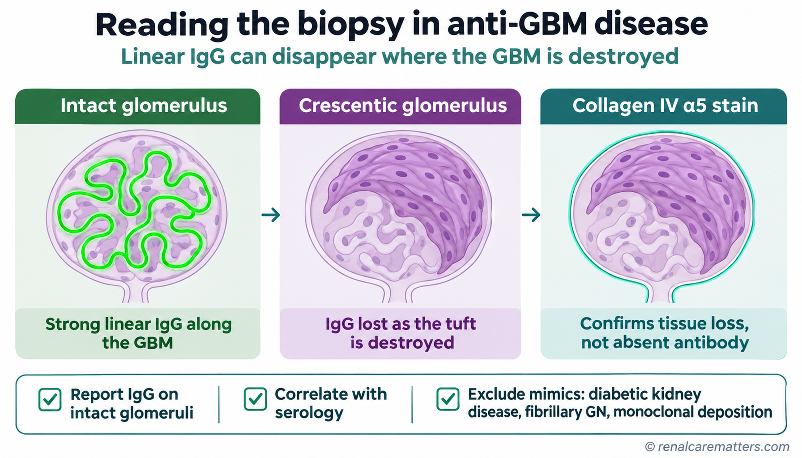
Stylized illustration (not real micrographs). Linear IgG is lost in glomeruli destroyed by crescents; collagen IV α5 staining confirms tissue loss rather than absent antibody (Ibrahim et al., 2026).
- IgG
- Immunoglobulin G
- GBM
- Glomerular basement membrane
- GN
- Glomerulonephritis
Biopsy logistics during plasma exchange. Plasma exchange with albumin replacement depletes clotting factors and fibrinogen. Use fresh plasma (300–600 mL) as part of replacement within 3 days of an invasive procedure and in active alveolar hemorrhage (McAdoo & Pusey, 2025). Biopsy should not delay starting treatment, but it should be done early because it carries most of the prognostic information (see Prognosis).
Treatment: KDIGO 1C, doses, edge cases, and the imlifidase story
| KDIGO 2021 practice point (ungraded) | Content |
|---|---|
| 11.2.1 | Start treatment without delay if the diagnosis is suspected, even before it is confirmed. |
| 11.2.2 | Continue plasma exchange until anti-GBM titers are no longer detectable. |
| 11.2.3 | Cyclophosphamide for 2–3 months; glucocorticoids for about 6 months. |
| 11.2.4 | No maintenance therapy is necessary for (single-positive) anti-GBM disease. |
| 11.2.5 | Patients positive for both anti-GBM and ANCA should receive maintenance therapy as for ANCA-associated vasculitis (AAV). |
| 11.2.6 | In refractory disease, rituximab may be tried. |
| 11.2.7 | Postpone kidney transplantation until anti-GBM antibodies have been undetectable for at least 6 months. |
Strength of the evidence, stated honestly. The 1C grade reflects what exists: one small randomized trial showing faster antibody clearance with plasma exchange, and decades of observational cohorts. No randomized trial has tested cyclophosphamide, steroid dose, or exchange intensity. The case for plasma exchange rests on direct pathogenicity of the antibody (a physiologic argument) plus consistent, confounded observational signals. In 448 Chinese patients, 12-month mortality fell from 57.1% (1991–2000) to 6.9% (2011–2020) alongside greater use of plasma exchange and earlier diagnosis, and plasma exchange was independently associated with lower mortality (hazard ratio [HR] 0.40; 95% confidence interval [CI] 0.16–0.95) (Jia et al., 2022). One French cohort (n = 122) found survival improved with each additional session (HR 0.87 per session; 95% CI 0.77–0.98) (McAdoo & Pusey, 2025); confounding by indication and calendar effects cannot be excluded.
Standard regimen (classic disease)
| Component | Dose and duration | Physiologic rationale and cautions |
|---|---|---|
| Plasma exchange (therapeutic plasma exchange, TPE) | Daily, 40–60 mL/kg (about 1–1.5 plasma volumes) against 5% albumin; add 300–600 mL fresh plasma within 3 days of a procedure or with alveolar hemorrhage. Continue until antibody negative, typically about 14 days; re-start if titers rebound. | One session removes about 50%–60% of intravascular IgG; about 45% of body IgG is intravascular and re-equilibrates over 6–24 h, so daily sessions are needed. Keep platelets above 70 × 10⁹/L, fibrinogen above 1 g/L, hemoglobin above 90 g/L, and corrected calcium in the normal range. Centrifugal or membrane separation both clear IgG; immunoadsorption is an alternative where available. |
| Cyclophosphamide | Oral 2–3 mg/kg/day (ideal body weight; maximum 200 mg) for 2–3 months; many centers use 50–100 mg/day if older than 55 or dialysis-dependent. Give after hemodialysis or plasma exchange. | Suppresses B- and T-cell proliferation, stopping new antibody. Hold if white cell count falls below 4 × 10⁹/L and restart at a lower dose. Hydration and frequent voiding protect the bladder. Gonadotoxic: discuss gamete preservation. Daily oral dosing may give more consistent exposure than pulses during extracorporeal therapy (the parent drug is removable by dialysis and exchange before activation), and nearly all published experience is oral; intravenous pulse data are limited. |
| Glucocorticoids | Prednisolone 1 mg/kg/day (maximum 60 mg), taper weekly to 20 mg by week 6, then gradually off by 6 months. Intravenous methylprednisolone pulses are widely used; evidence of added benefit is limited. | Anti-inflammatory bridge while the antibody falls. Reduced-dose regimens validated in ANCA vasculitis have not been tested here and cannot be assumed to work. |
| Rituximab (alternative or adjunct) | 1 g on days 0 and 14, or 375 mg/m² weekly × 4. Delay plasma exchange 24–48 h after each infusion. | Depletes CD20+ B cells but not T cells or plasma cells. For contraindications to cyclophosphamide (cytopenias, malignancy, fertility concerns), refractory disease, or to reduce cumulative cyclophosphamide exposure; in a review of 67 patients, kidney survival was 67% (published cases; risk of publication bias). |
| Prophylaxis | Cotrimoxazole (dose-adjusted for kidney function); antifungal while on high-dose steroids; proton-pump inhibitor; calcium and vitamin D; hepatitis B screening with antiviral prophylaxis if core antibody positive. | Infection risk is highest in older adults and patients on dialysis; weaker regimens chosen to limit it may partly explain worse outcomes in older patients (Kuang et al., 2026). |
Doses from McAdoo & Pusey (2025) and KDIGO (2021). Adjust for age, kidney function, cytopenias, and local formulary.
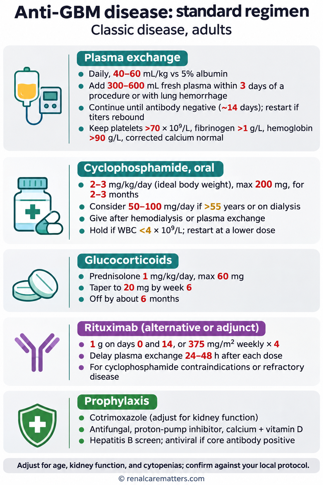
Ward reference card summarizing the standard regimen for classic disease in adults (McAdoo & Pusey, 2025; KDIGO, 2021). Cyclophosphamide is adjusted to the white blood cell count (WBC). Confirm against your local protocol.
- WBC
- White blood cell count

First 24 hours: suspect RPGN with or without hemoptysis; send anti-GBM and ANCA together; start glucocorticoids and plasma exchange when suspicion is high; biopsy early with plasma replacement around the procedure; complete daily exchange, oral cyclophosphamide, and a 6-month steroid taper; apply the KDIGO exception thoughtfully; arrange follow-up.
- ANCA
- Antineutrophil cytoplasmic antibody
- MPO
- Myeloperoxidase
- PR3
- Proteinase 3
- CBC
- Complete blood count
- CT
- Computed tomography
- KDIGO
- Kidney Disease: Improving Global Outcomes
Who to treat, and the edge cases
Alveolar hemorrhage responds in 90%–100% of patients and is always an indication for full treatment regardless of kidney status. For the kidney, McAdoo & Pusey (2025) recommend intensive treatment for RPGN not requiring dialysis, and for dialysis-requiring RPGN when any favorable feature is present: fewer than 100% crescents, under 50% glomerulosclerosis, a non-oliguric presentation, an alternative explanation for the dialysis need (for example, severe acute tubular injury), recent dialysis start (under about 72 hours), or co-existing ANCA. In their experience, patients dialysis-dependent for more than 7 days before immunosuppression very rarely recover. A short trial (2–4 weeks), tapered if there is no kidney response, is reasonable in younger patients and can also speed antibody clearance toward transplantation. Use the Anti-GBM Kidney Outcome Risk calculator to frame this conversation.
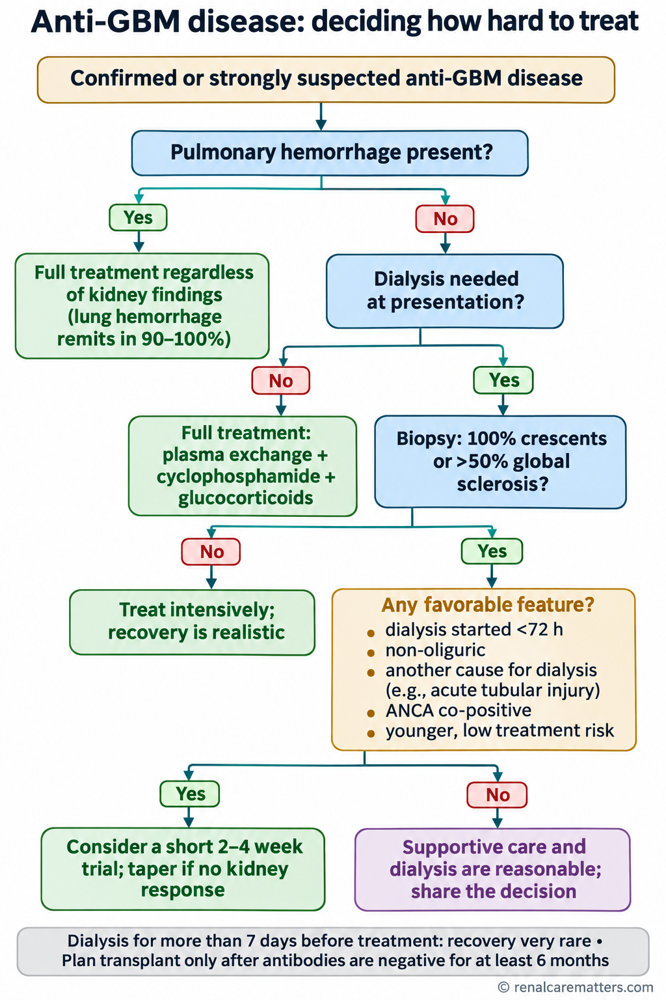
Deciding how hard to treat. Pulmonary hemorrhage is always treated; the KDIGO exception applies only to dialysis-dependent patients with 100% crescents or more than 50% global sclerosis and no lung hemorrhage (McAdoo & Pusey, 2025).
- ANCA
- Anti-neutrophil cytoplasmic antibody
Refractory disease and rebound
"Refractory" has no agreed definition. First exclude mimics: irreversible scar from late diagnosis, infection, pulmonary edema, pulmonary embolism, and acute respiratory distress syndrome. True ongoing antibody production is managed by intensifying exchange, re-checking adherence and dose, and adding rituximab (Practice Point 11.2.6). Antibody rebound after an initially negative test should prompt re-starting exchange; in the imlifidase phase 2 study, patients with rebound tended to have lower 6-month eGFR (11 vs 34 mL/min/1.73 m², P = .055), and those still on dialysis at 6 months had a higher EB/EA ratio at rebound (P = .047) (Tyrberg et al., 2023; observational analysis of trial samples).
Imlifidase: what the trials do and do not show
Mechanism Imlifidase is an IgG-degrading endopeptidase from Streptococcus pyogenes that cleaves all IgG at the hinge within hours, potentially including GBM-bound antibody that may be inaccessible to plasma exchange (mouse data and a three-patient report). Trial GOOD-IDES-01 (single-arm phase 2a, n = 15, eGFR under 15 mL/min/1.73 m², 10 on dialysis): one dose of 0.25 mg/kg cleared antibody below the reference range within 6 hours in all patients; 67% (10/15) were dialysis-independent at 6 months versus 18% (9/50) of historical controls (Uhlin et al., 2022). Antibodies rebounded in 10 patients, who then needed plasma exchange. Trial GOOD-IDES-02 (open-label phase 3, n = 50, randomized 1:1, 0.5 mg/kg versus standard care with immediate, intense plasma exchange, cyclophosphamide, and glucocorticoids) did not meet its primary endpoint of eGFR at 6 months. About 60% of the imlifidase arm were dialysis-free at 6 months, but the standard-care arm responded similarly; the trial had been powered on historical dialysis-free rates of 20%–25% (Hansa Biopharma, 2025; press release, not yet peer-reviewed; 24-month follow-up ongoing).
The real lesson of GOOD-IDES-02
The control arm, not the drug, was the surprise. When standard care is delivered immediately and intensely in trial conditions, dialysis-free survival appears far better than the historical benchmarks that single-arm studies (including GOOD-IDES-01) used as comparators. Two inferences follow: comparisons against historical controls overstate benefit in this disease, and the speed and completeness of standard care may matter more than any add-on. Imlifidase holds orphan-drug designation but no approval for anti-GBM disease; avacopan has no evidence in single-positive disease and may be considered only as an adjunct in double-positive patients (McAdoo & Pusey, 2025).
Prognosis: dialysis status and normal glomeruli decide most of it
Kidney outcome is set largely by the injury present when treatment starts. Two scoring frameworks now quantify that, both built on the same biology: normal glomeruli are the only tissue that can carry function after the crescents scar.
| Presentation (Levy et al., 2001; n = 71, all treated with exchange, prednisolone, cyclophosphamide) | Kidney survival, 1 year | Patient survival, 1 year |
|---|---|---|
| Creatinine under 500 µmol/L (5.7 mg/dL) | 95% | 100% |
| Creatinine 500 µmol/L or more, not on dialysis | 82% | 83% |
| Dialysis-dependent | 8% | 65% |
All dialysis-dependent patients with 100% crescents in that series stayed on dialysis. Newer series report recovery from dialysis dependence of about 17%–20% at best (McAdoo & Pusey, 2025).
Cohort Floyd et al. (2023), 174 patients from an international multicenter cohort, showed that the ANCA Renal Risk Score (RRS; Brix et al., 2018) transfers to anti-GBM disease: 36-month kidney survival was 100%, 62.4%, and 20.7% in the low-, moderate-, and high-risk groups. The two independent predictors of end-stage kidney disease (ESKD) were need for kidney replacement therapy (KRT) at diagnosis and the percentage of normal glomeruli, with 10% as the best cut point for recovery. Combining them gave four groups with 36-month kidney survival of 96.4%, 74.0%, 42.3%, and 14.1%.
Floyd et al. (2023): 36-month kidney survival 96.4% (no dialysis, at least 10% normal glomeruli), 74.0% (no dialysis, under 10%), 42.3% (dialysis, at least 10%), 14.1% (dialysis, under 10%). Retrospective cohort; group estimates.
- JASN
- Journal of the American Society of Nephrology
Cohort Suhlrie et al. (2026): in 72 European patients diagnosed 2020–2024, dialysis at diagnosis carried an odds ratio (OR) of 11 (95% CI 2–57) and adult age an OR of 16 (95% CI 3–33) for chronic kidney disease (CKD) G3 or worse at last follow-up; antibody titer also predicted lower final eGFR. Double positivity and crescent count were not significant in this small cohort.
Variant forms: four categories that break the textbook pattern
Kuang et al. (2026), from the Peking University group, propose grouping variant forms into four categories by immunology and presentation. The value of the scheme is practical: each variant changes either the diagnostic test that will find it, the treatment that suits it, or the follow-up it needs.

Four variant categories: overlapping autoimmune disease (ANCA, membranous nephropathy, IgA nephropathy), immunologically distinct forms (Alport post-transplant, seronegative), different clinical patterns (relapse, older adults, normal kidney function), and medication- or trigger-associated disease.
- ANCA
- Antineutrophil cytoplasmic antibody
- IgA
- Immunoglobulin A
- IgG
- Immunoglobulin G
| Variant | Distinguishing features | Prognosis | Management note |
|---|---|---|---|
| 1. Overlap | |||
| With ANCA ("double-positive") | About one-third; usually MPO; older, longer prodrome, more chronicity | Kidney and patient survival comparable to classic disease in Kuang review; relapse risk like AAV | Standard anti-GBM induction, then AAV-style maintenance (KDIGO Practice Point 11.2.5) |
| With membranous nephropathy (MN) | About 5%–6% of anti-GBM disease; more proteinuria, milder kidney injury, less lung disease; only 20.8% phospholipase A2 receptor (PLA2R)-associated in pooled series; electron microscopy needed to see deposits under crescents | Better than classic disease unless KRT is needed at presentation | Standard induction; consider B-cell-depleting therapy afterward because MN relapses |
| With IgA nephropathy (IgAN) | Up to 20% in a Chinese biopsy series; lung hemorrhage only 5.6% vs about 30% in classic disease per Kuang (other series report 40%–60%); nephrotic proteinuria 42.5%; IgAN precedes or is concurrent, never after in published cases | Milder creatinine and better recovery than classic; KRT at diagnosis still predicts ESKD | Standard anti-GBM care; newer IgAN agents untested in the overlap |
| 2. Immunologically distinct | |||
| Alport post-transplant (alloimmune) | Alloantibodies to α5(IV)NC1 EA on the intact hexamer; mostly X-linked males; within the first year | Very poor; repeated graft loss despite exchange and immunosuppression | Routine α3 assays may be negative; see Alport section |
| Seronegative / atypical | About 10% seronegative by standard assays; linear IgG without another cause; light-chain restriction in about 50%; often indolent, fewer crescents, less lung disease | Generally favorable | Immunosuppression by severity; plasma exchange generally not indicated without RPGN or circulating antibody; evaluate for a monoclonal protein |
| 3. Clinical phenotype | |||
| Native-kidney recurrence | Under 6% (Kuang) or under 3% (McAdoo & Pusey), months to years later; lung hemorrhage in up to 60%; smoking; α3 antibody often undetectable during lung relapse | Responds to re-treatment; rituximab effective in reports | Re-biopsy to exclude AAV or MN; re-induce while weighing cumulative toxicity; insist on smoking cessation |
| Older adults (sixth to seventh decades, more women) | More than 20% of cases; lower creatinine, less lung hemorrhage, more ANCA | Kidney survival similar; patient survival worse (age is an independent risk factor) | Benefit of exchange plus immunosuppression was seen in younger but not older patients in one cohort, possibly reflecting weaker regimens chosen for safety |
| Normal kidney function | About 5% (24/448 in Peking cohort); young male smokers with lung hemorrhage; mild mesangial lesions; IgG2/IgG4 antibodies with narrow α3/α5 repertoire | Favorable; some need little or no immunosuppression | Serology and biopsy both matter; treat lung hemorrhage fully |
| 4. Medication- or trigger-associated | |||
| Alemtuzumab | Mostly multiple sclerosis patients; shared HLA-DRB1*15:01 risk makes causality uncertain | Similar to classic | Test anti-GBM promptly if kidney function falls |
| Immune checkpoint inhibitors (ICI) | Sporadic cases; plausibly T-cell overactivation breaking tolerance | Similar to classic | Withdraw the ICI; standard anti-GBM treatment |
| After severe acute respiratory syndrome coronavirus 2 (SARS-CoV-2) vaccination or epidemics of COVID-19 or influenza | Case reports and incidence clusters; typical clinical and pathologic features | Similar to classic | Association only; treat as classic disease |
Two further forms worth naming (McAdoo & Pusey, 2025): IgA-dominant anti-GBM disease, with strong linear IgA and little IgG, which conventional IgG assays miss and which may carry poorer kidney outcomes; and isolated or predominant pulmonary disease (under 10% of larger series), where a kidney biopsy can still show linear IgG and dedicated assays may detect IgG4 antibodies. Consider variant anti-GBM disease in "idiopathic" pulmonary hemorrhage.
Double-positive disease: induce like anti-GBM, maintain like AAV
Cohort McAdoo et al. (2017) compared 37 double-positive patients with 41 single-positive anti-GBM and 568 AAV patients from four European centers. Double-positive patients had the age distribution and prolonged prodrome of AAV and more chronic damage on biopsy, but presented with the severity of anti-GBM disease (high rates of alveolar hemorrhage and dialysis). They tended to recover from dialysis more often than single-positive anti-GBM patients (about 33% vs 17%) and had intermediate long-term kidney survival. Over a median 4.8 years, about half of surviving double-positive and AAV patients relapsed, whereas no single-positive anti-GBM patient did. Patient survival was similar across groups.
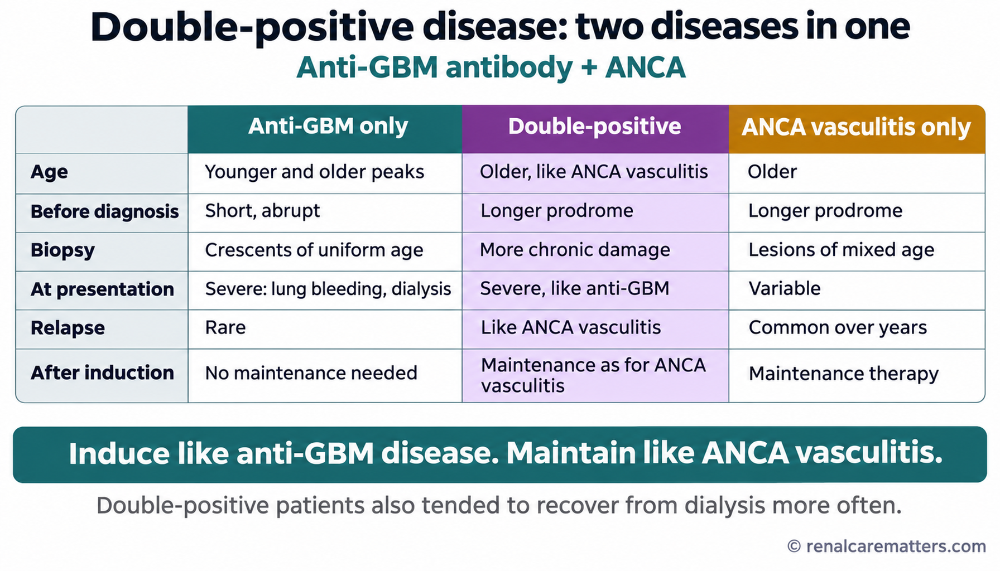
Double-positive disease is a hybrid: induce like anti-GBM disease, maintain like ANCA vasculitis (McAdoo et al., 2017; KDIGO Practice Point 11.2.5).
- ANCA
- Anti-neutrophil cytoplasmic antibody
Mechanism Mechanism. ANCA can precede anti-GBM antibodies (Olson et al., 2011), and in rats neutrophil proteases released by ANCA-activated neutrophils expose cryptic α3(IV)NC1 epitopes. The reverse route, intermolecular spreading from anti-GBM to linear MPO peptides, is also described. Either way, the clinical phenotype is a hybrid: an anti-GBM-like acute course and an AAV-like relapse risk.
Discordant data. Kuang et al. (2026) summarize kidney and patient survival in double-positive disease as comparable to isolated anti-GBM disease, and Suhlrie et al. (2026) found double positivity unrelated to final eGFR; Jia et al. (2022) found ANCA positivity predicted mortality (HR 4.43). These are not contradictory once the endpoint and population are read carefully: kidney recovery may be slightly better, death risk may be higher in older ANCA-positive patients, and relapse risk is clearly higher.
Clinical decision points
Induce as anti-GBM disease (plasma exchange, cyclophosphamide, glucocorticoids). Treat intensively even when dialysis-dependent, especially if the biopsy shows pauci-immune or mixed-age lesions. Then give maintenance therapy as for AAV (KDIGO Practice Point 11.2.5), follow ANCA and clinical activity long-term, and consider avacopan only as an adjunct in this group.
Alport syndrome after transplantation: an alloimmune anti-GBM disease
Mechanism In X-linked Alport syndrome the patient never expresses normal α5(IV) (and often α3/α4) in the GBM, so a transplanted kidney presents a neo-antigen. Unlike classic autoantibodies, which bind cryptic α3 epitopes only after hexamer dissociation, Alport alloantibodies bind the EA region of α5(IV)NC1 on the intact α3α4α5 hexamer. Standard α3-based assays may therefore be negative. Autosomal recessive Alport (COL4A3) may generate alloantibodies to accessible α3 epitopes (Kuang et al., 2026).
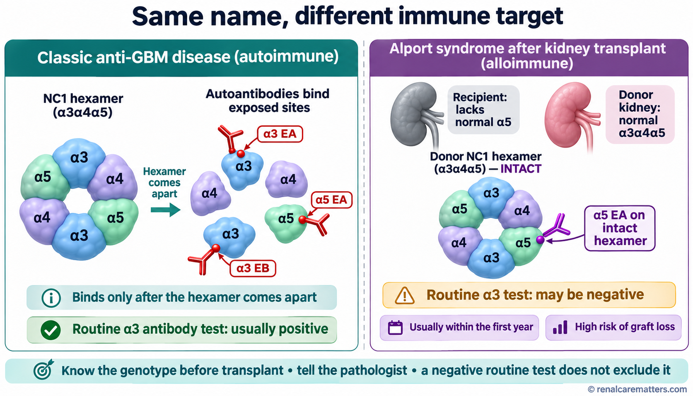
Autoimmune versus alloimmune anti-GBM disease. Alport alloantibodies bind the α5(IV)NC1 EA epitope on the intact hexamer, so routine α3-based assays may be negative (Kuang et al., 2026).
- NC1
- Noncollagenous domain 1
- EA, EB
- Antibody-binding regions (epitopes)
Cohort Anti-GBM antibodies appear in about 5%–10% of Alport recipients, overt glomerulonephritis less often, usually within the first year, ranging from an isolated creatinine rise to full RPGN; outcome is poor despite exchange and intensive immunosuppression, and re-transplantation carries a very high risk of aggressive recurrence. Males with X-linked disease and large COL4A5 deletions are at highest risk; genetic testing informs the pre-transplant discussion (McAdoo & Pusey, 2025).
Decision points. Know the genotype before listing; tell the transplant pathologist the diagnosis so linear IgG is looked for on allograft biopsies; do not be reassured by a negative routine anti-GBM assay. For the native-kidney features of Alport syndrome, see the hematuria guide follow-up protocol. Contrast this with autoimmune anti-GBM disease, where recurrence after transplantation is rare once antibodies have been undetectable for at least 6 months (KDIGO Practice Point 11.2.7).
Children: more preserved function, same urgency
Cohort Suhlrie et al. (2026) reported the largest recent pediatric comparison: 72 patients from 18 European centers diagnosed 2020–2024, 25 children (median age 14) and 47 adults (median age 61), median follow-up 18 months (survey-based, retrospective).
| Feature | Children | Adults | P value |
|---|---|---|---|
| Female | 80% | 40% | 0.0025 |
| eGFR at diagnosis, mL/min/1.73 m² (median) | 36 | 13 | 0.0037 |
| Dialysis at diagnosis | 46% | 62% | 0.20 |
| Pulmonary hemorrhage | 43% | 21% | 0.09 |
| ANCA double positivity | 28% | 52% | 0.078 |
| Cyclophosphamide-free (rituximab and/or MMF) | 32% | 9% | 0.018 |
| Exchange volume, mL/kg (median) | 73 | 60 | 0.05 |
| Final eGFR off KRT, mL/min/1.73 m² (median) | 71 | 32 | 0.0001 |
| Normal final eGFR (above 90) | 29% | 3% | 0.02 |
| Kidney failure at last follow-up | 24% | 38% | 0.18 |
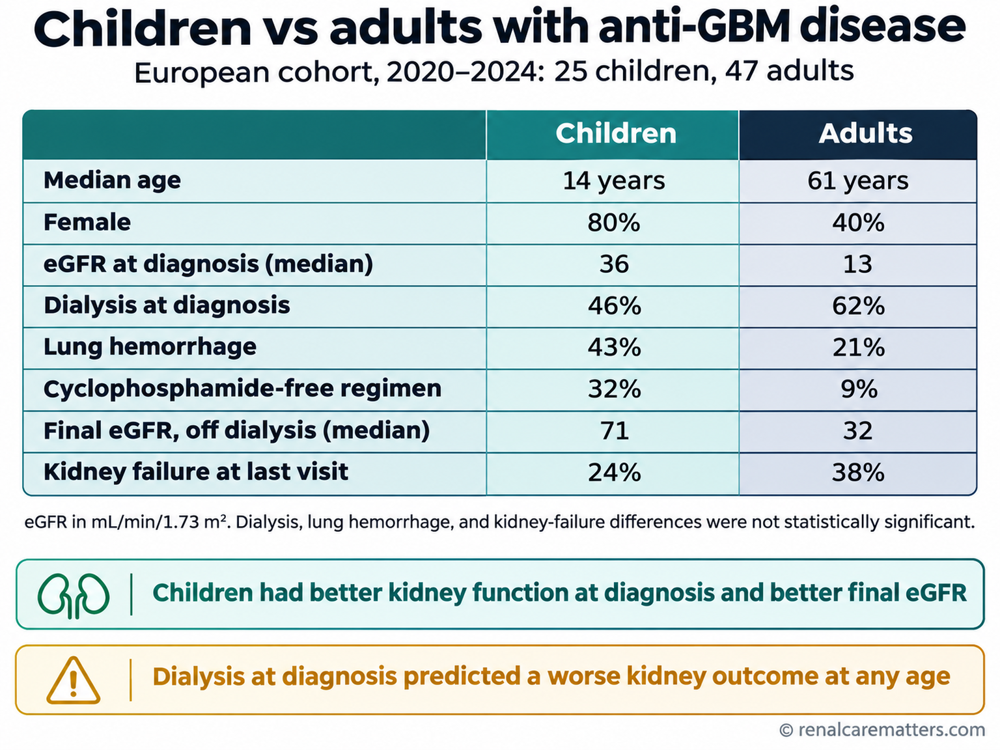
Children versus adults, European cohort 2020–2024 (Suhlrie et al., 2026). eGFR in mL/min/1.73 m².
- eGFR
- Estimated glomerular filtration rate
Plasma exchange was used in 85% (daily in 84%), started a median of 1 day after diagnosis, and a median of 11 sessions was needed to clear antibody. Adult age (OR 16) and dialysis at diagnosis (OR 11) independently predicted CKD G3 or worse. Better pediatric outcomes are at least partly explained by better eGFR at diagnosis (interstitial fibrosis only tended to be lower in children), so the age effect should not be read as children "responding better" to the same injury. One child died of disseminated varicella at 17 months of treatment.
Clinical application. Treat children with the same urgency; weight-adjust exchange volumes; weigh cyclophosphamide gonadotoxicity against limited rituximab-plus-mycophenolate mofetil (MMF) data; and, as an evidence-supported inference from the fatal varicella case, check varicella zoster virus (VZV) immunity and plan exposure management before prolonged immunosuppression. Do not underestimate lung involvement in children.
Philippine practice: getting standard care delivered fast
Practice No Philippine series on anti-GBM disease or published local data on serology turnaround and apheresis access was found when this guide was prepared, so this section offers operational decision points rather than numbers.
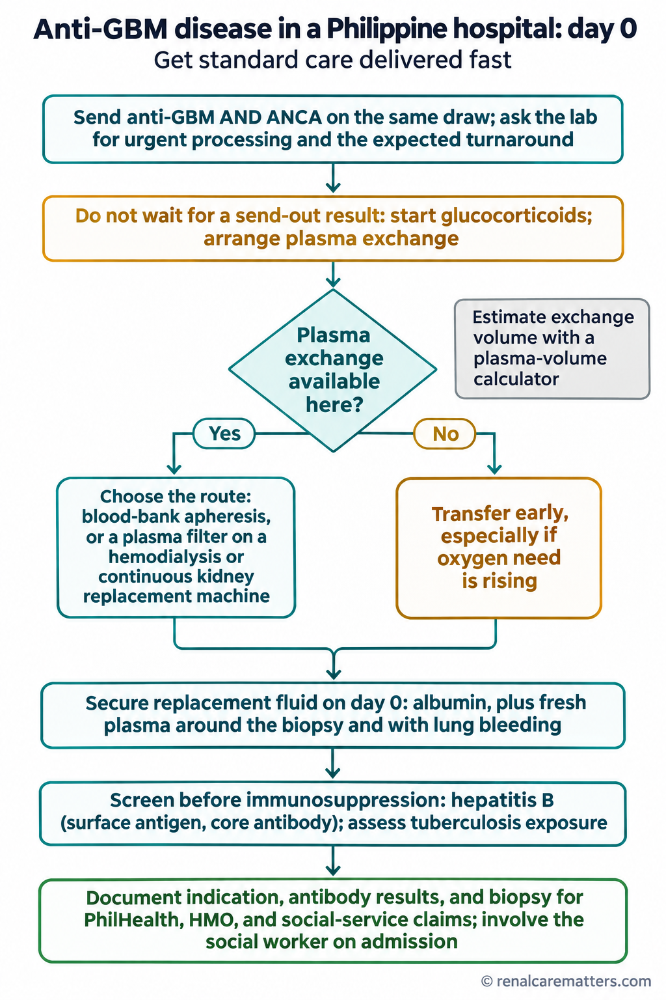
Day-0 pathway for Philippine hospitals: practical operational advice; no local outcome data were available.
- ANCA
- Anti-neutrophil cytoplasmic antibody
- HMO
- Health maintenance organization
Evidence map and open questions
| Claim | Source | Evidence type |
|---|---|---|
| Exchange + cyclophosphamide + glucocorticoids for all except dialysis-dependent with 100% crescents or >50% sclerosis and no lung hemorrhage | KDIGO 2021, Rec 11.2.1 | Guideline, 1C |
| Start before diagnosis is confirmed when suspected | KDIGO 2021, PP 11.2.1 | Guideline practice point (ungraded) |
| Dialysis-dependent at presentation: 8% kidney survival at 1 year | Levy et al., 2001 | Single-center retrospective cohort |
| Four-group 36-month kidney survival 96.4% → 14.1% | Floyd et al., 2023 | International retrospective cohort, n = 174 |
| Exchange associated with lower mortality (HR 0.40) | Jia et al., 2022 | Retrospective cohort, n = 448; confounding possible |
| Double-positive: AAV-like relapse; no relapse in single-positive | McAdoo et al., 2017 | Multicenter retrospective cohort |
| Imlifidase: 67% dialysis-independent vs 18% historical | Uhlin et al., 2022 | Single-arm phase 2a; historical control |
| Imlifidase phase 3 missed primary endpoint; control arm similar | Hansa Biopharma, 2025 | Randomized phase 3; press release only |
| Four-category variant classification | Kuang et al., 2026 | Narrative review with pooled case series |
| Loss of linear IgG in crescentic glomeruli | Ibrahim et al., 2026 | Single case (nephrology image) |
| Children: better final eGFR; dialysis and adult age predict CKD G3+ | Suhlrie et al., 2026 | Multicenter retrospective survey, n = 72 |
| Doses, futility criteria, dialysis >7 days rarely recovers | McAdoo & Pusey, 2025 | Expert treatment standard (narrative) |
What we still do not know
Whether intravenous steroid pulses add anything; oral versus intravenous cyclophosphamide; whether rituximab can replace cyclophosphamide first-line; the right intensity in older adults; how to treat seronegative and atypical disease; and whether any add-on beats fast, complete standard care. Long-term GOOD-IDES-02 data and full peer-reviewed publication are awaited.